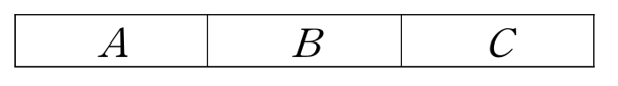

확률과 통계
구두테스트 퀴즈 전체 문제 정리
Chapter 1 ~ Chapter 9 | 메인 문제 187개 | 유사 문제 포함 총 748개
목차
Chapter 1. 경우의 수
Part1. 덧셈 법칙 vs 곱셈 법칙 (8문제)
Part2. 순열 (8문제)
Part3. 조합 (12문제)
Chapter 2. 여러가지 순열
Part1. 중복순열 (10문제)
Part2. 같은 것이 있는 순열 (11문제)
Chapter 3. 중복조합
Part1. 중복조합 (10문제)
Part2. 경우의 수 구별해보기 (13문제)
Chapter 4. 이항정리
Part1. 이항정리의 정리 (5문제)
Part2. 이항정리의 성질 (11문제)
Chapter 5. 확률
Part1. 확률의 정의 (5문제)
Part2. 확률의 계산 (8문제)
Chapter 6. 조건부확률
Part1. 조건부확률 (4문제)
Part2. 곱셈정리 (5문제)
Part3. 독립과 종속 (10문제)
Part4. 독립시행의 확률 (5문제)
Chapter 7. 이산확률변수와 이항분포
Part1. 확률변수 (5문제)
Part2. 이산확률변수 (6문제)
Part3. 확률분포 (10문제)
Chapter 8. 연속확률변수와 정규분포
Part1. 연속확률변수와 확률밀도함수 (5문제)
Part2. 정규분포 (6문제)
Part3. 표준정규분포 (7문제)
Chapter 9. 모집단과 표본
Part1. 모집단과 표본 (15문제)
Part2. 모평균의 추정 (8문제)
Chapter 1. 경우의 수
Part1. 덧셈 법칙 vs 곱셈 법칙
다음 문제에 대하여 설명하여라.
[Q1] 다음 5가지 상황 중 덧셈 법칙을 사용하는 것 2가지를 고르고, 그 이유를 설명하시오.
A) 주사위를 던져 짝수 또는 3의 배수가 나오는 경우
B) 셔츠 3종류와 바지 4종류를 하나씩 골라 입는 경우
C) 서울에서 부산까지 KTX 또는 비행기를 이용하는 경우
D) 동전과 주사위를 동시에 던지는 경우
E) 빨간 공 2개, 파란 공 3개 중 1개를 꺼내는 경우
유사 문제
다음 문제에 대하여 설명하여라.
[Q1-1] 다음 5가지 상황 중 덧셈 법칙을 사용하는 것 2가지를 고르고, 그 이유를 설명하시오.
A) 점심으로 한식 3가지 또는 중식 4가지 중 하나를 고르는 경우
B) 상의 5종류와 하의 3종류 중 각각 하나를 고르는 경우
C) 1부터 10까지 중 홀수 또는 10의 약수를 고르는 경우
D) 비밀번호의 첫 자리와 둘째 자리를 정하는 경우
E) 편의점에서 음료 4종류 또는 과자 5종류 중 하나를 고르는 경우
다음 문제에 대하여 설명하여라.
[Q1-2] 다음 5가지 상황 중 덧셈 법칙을 사용하는 것 2가지를 고르고, 그 이유를 설명하시오.
A) 수학책 2권, 영어책 3권 중 한 과목의 책 1권을 고르는 경우
B) 앞면과 뒷면이 있는 동전 2개를 던지는 경우
C) 볼펜 4자루와 연필 2자루 중 필기구 1개를 고르는 경우
D) 3개의 문 중 하나로 들어가고 2개의 문 중 하나로 나오는 경우
E) 주사위 2개를 동시에 던지는 경우
다음 문제에 대하여 설명하여라.
[Q1-3] 다음 5가지 상황 중 덧셈 법칙을 사용하는 것 2가지를 고르고, 그 이유를 설명하시오.
A) 지하철 4개 노선 또는 버스 6개 노선 중 하나를 이용하는 경우
B) 4명 중 반장과 부반장을 뽑는 경우
C) 카페에서 아메리카노 또는 라떼 중 하나를 주문하는 경우
D) 오전에 영어, 오후에 수학 과목을 수강하는 경우
E) A팀 5명 중 1명을 뽑거나 B팀 3명 중 1명을 뽑는 경우
다음 문제에 대하여 설명하여라.
[Q2] 다음 5가지 상황 중 곱셈 법칙을 사용하는 것 2가지를 고르고, 그 이유를 설명하시오.
A) 모자 3종류와 신발 4종류를 동시에 고르는 경우
B) 사탕 5개 또는 초콜릿 3개 중 하나를 고르는 경우
C) 집에서 학교까지 버스 3개 노선, 학교에서 도서관까지 지하철 2개 노선으로 가는 경우
D) 빨간 카드 4장 또는 파란 카드 6장 중 1장을 뽑는 경우
E) 1학년 5개 반 또는 2학년 4개 반 중 하나를 선택하는 경우
유사 문제
다음 문제에 대하여 설명하여라.
[Q2-1] 다음 5가지 상황 중 곱셈 법칙을 사용하는 것 2가지를 고르고, 그 이유를 설명하시오.
A) 피자 4종류와 음료 3종류를 각각 하나씩 고르는 경우
B) 수학 문제 5개 또는 영어 문제 3개 중 하나를 푸는 경우
C) 동전을 던진 후 주사위를 던지는 경우
D) 남학생 4명 또는 여학생 5명 중 반장 1명을 뽑는 경우
E) 빨간 공 3개 또는 흰 공 2개 중 하나를 꺼내는 경우
다음 문제에 대하여 설명하여라.
[Q2-2] 다음 5가지 상황 중 곱셈 법칙을 사용하는 것 2가지를 고르고, 그 이유를 설명하시오.
A) 아이스크림 6종류 또는 케이크 4종류 중 하나를 고르는 경우
B) 비밀번호 첫째 자리(1~9)와 둘째 자리(0~9)를 정하는 경우
C) 버스 3종류와 택시 2종류 중 하나를 이용하는 경우
D) 셔츠 5벌과 넥타이 3개를 각각 하나씩 고르는 경우
E) 1반 또는 2반에서 대표 1명을 뽑는 경우
다음 문제에 대하여 설명하여라.
[Q2-3] 다음 5가지 상황 중 곱셈 법칙을 사용하는 것 2가지를 고르고, 그 이유를 설명하시오.
A) 과일 3종류 또는 채소 4종류 중 하나를 고르는 경우
B) 서울에서 대전까지 KTX 4편, 대전에서 부산까지 SRT 3편으로 가는 경우
C) 수학 동아리 또는 과학 동아리 중 하나를 선택하는 경우
D) 가위바위보에서 두 사람이 각각 하나를 내는 경우
E) 공원 3곳 또는 카페 5곳 중 한 곳을 가는 경우
다음 문제에 대하여 설명하여라.
[Q3] 1부터 30까지의 자연수 중에서 3의 배수 또는 5의 배수의 개수를 구하시오.
유사 문제
다음 문제에 대하여 설명하여라.
[Q3-1] 1부터 20까지의 자연수 중에서 2의 배수 또는 3의 배수인 수의 개수를 구하시오.
다음 문제에 대하여 설명하여라.
[Q3-2] 1부터 40까지의 자연수 중에서 4의 배수 또는 6의 배수인 수의 개수를 구하시오.
다음 문제에 대하여 설명하여라.
[Q3-3] 1부터 50까지의 자연수 중에서 5의 배수 또는 7의 배수인 수의 개수를 구하시오.
다음 문제에 대하여 설명하여라.
[Q4] 서로 다른 두 개의 주사위를 동시에 던질 때, 눈의 수의 합이 5 또는 7이 되는 경우의 수를 구하시오.
유사 문제
다음 문제에 대하여 설명하여라.
[Q4-1] 서로 다른 두 개의 주사위를 동시에 던질 때, 눈의 수의 합이 4 또는 10이 되는 경우의 수를 구하시오.
다음 문제에 대하여 설명하여라.
[Q4-2] 두 개의 주사위를 던질 때, 눈의 수의 곱이 6 또는 12가 되는 경우의 수를 구하시오.
다음 문제에 대하여 설명하여라.
[Q4-3] 서로 다른 두 개의 주사위를 동시에 던질 때, 눈의 수의 합이 3 또는 11이 되는 경우의 수를 구하시오.
다음 문제에 대하여 설명하여라.
[Q5] 방정식 x+2y=8을 만족시키는 음이 아닌 정수 x, y의 순서쌍 (x, y)의 개수를 구하시오.
유사 문제
다음 문제에 대하여 설명하여라.
[Q5-1] 방정식 x+y=6을 만족시키는 음이 아닌 정수 x, y의 순서쌍 (x, y)의 개수를 구하시오.
다음 문제에 대하여 설명하여라.
[Q5-2] 방정식 2x+y=10을 만족시키는 음이 아닌 정수 순서쌍의 개수를 구하시오.
다음 문제에 대하여 설명하여라.
[Q5-3] 방정식 3x+y=12를 만족시키는 음이 아닌 정수 x, y의 순서쌍 (x, y)의 개수를 구하시오.
다음 문제에 대하여 설명하여라.
[Q6] A에서 B로 가는 길이 3가지, B에서 C로 가는 길이 4가지일 때, A에서 C까지 가는 경우의 수를 구하시오.
유사 문제
다음 문제에 대하여 설명하여라.
[Q6-1] 집에서 학교까지 버스 노선이 5개, 학교에서 도서관까지 지하철 노선이 3개 있을 때 경우의 수를 구하시오.
다음 문제에 대하여 설명하여라.
[Q6-2] A에서 B로 가는 방법 4가지, B에서 C로 가는 방법 2가지일 때의 경우의 수를 구하시오.
다음 문제에 대하여 설명하여라.
[Q6-3] 서울에서 대전까지 KTX 5편, 대전에서 부산까지 KTX 3편이 있을 때 경우의 수를 구하시오.
다음 문제에 대하여 설명하여라.
[Q7] 100원짜리 동전 4개, 50원짜리 동전 3개가 있을 때, 지불할 수 있는 서로 다른 금액의 가짓수를 구하시오. (단, 0원을 지불하는 것은 제외한다.)
유사 문제
다음 문제에 대하여 설명하여라.
[Q7-1] 500원 3개, 100원 5개로 지불할 수 있는 서로 다른 금액의 가짓수를 구하시오. (0원 제외)
다음 문제에 대하여 설명하여라.
[Q7-2] 1000원권 2장, 5000원권 3장으로 만들 수 있는 금액의 종류를 구하시오.
다음 문제에 대하여 설명하여라.
[Q7-3] 10원 4개, 50원 2개로 지불 가능한 금액의 가짓수를 구하시오.
다음 문제에 대하여 설명하여라.
[Q8] 집합 A = {1, 2, 3}, B = {a, b, c, d}에 대하여 A에서 B로의 함수의 개수를 구하시오.
유사 문제
다음 문제에 대하여 설명하여라.
[Q10-1] 원소가 2개인 집합에서 원소가 5개인 집합으로의 함수의 개수를 구하시오.
다음 문제에 대하여 설명하여라.
[Q10-2] {1, 2, 3, 4}에서 {x, y, z}로의 함수의 개수를 구하시오.
다음 문제에 대하여 설명하여라.
[Q10-3] 집합 X의 원소가 3개, 집합 Y의 원소가 4개일 때, X에서 Y로의 함수의 개수를 구하시오.
Part2. 순열
다음 문제에 대하여 설명하여라.
[Q1] ₙPᵣ의 의미는 무엇이고 어떻게 계산할까? (예를 들어 설명해도 좋음)
유사 문제
다음 문제에 대하여 설명하여라.
[Q1-1] 순열의 정의를 쓰고, 7개에서 3개를 택하는 순열을 기호로 나타내시오.
다음 문제에 대하여 설명하여라.
[Q1-2] ₙPᵣ의 정의를 쓰고, n과 r이 의미하는 바를 쓰시오.
다음 문제에 대하여 설명하여라.
[Q1-3] ₅P₃의 의미를 말하고, 그 값을 구하시오.
순열에 대하여 다음을 구하시오.
[Q2] ₙPᵣ = (n!을 이용하여 나타내시오.)
ₙPₙ =
0! =
ₙP₀ =
유사 문제
다음 문제에 대하여 설명하여라.
[Q2-1] ₙPᵣ을 팩토리얼을 이용하여 나타내시오.
다음 문제에 대하여 설명하여라.
[Q2-2] ₙPᵣ = (n!)/((n-r)!) 공식을 유도하시오.
다음 문제에 대하여 설명하여라.
[Q2-3] 0! = 1인 이유를 설명하시오.
다음 문제에 대하여 설명하여라.
[Q3] 5명 중에서 회장, 부회장을 뽑는 경우의 수를 구하시오.
유사 문제
다음 문제에 대하여 설명하여라.
[Q3-1] 6명 중에서 1등, 2등, 3등을 뽑는 경우의 수를 구하시오.
다음 문제에 대하여 설명하여라.
[Q3-2] 8개 중 4개를 뽑아 일렬로 배열하는 경우의 수를 구하시오.
다음 문제에 대하여 설명하여라.
[Q3-3] 10명의 선수 중에서 금메달, 은메달, 동메달 수상자를 정하는 경우의 수를 구하시오.
다음 문제에 대하여 설명하여라.
[Q4] 4개의 숫자 0, 1, 2, 3에서 서로 다른 3개의 숫자를 이용하여 만들 수 있는 세 자리 자연수의 경우의 수를 구하시오.
유사 문제
다음 문제에 대하여 설명하여라.
[Q4-1] 0, 1, 2, 3, 4에서 3개를 택해 세 자리 자연수를 만드는 경우의 수를 구하시오.
다음 문제에 대하여 설명하여라.
[Q4-2] 1, 2, 3, 4, 5 중 3개로 세 자리 수를 만들 때, 짝수의 개수를 구하시오.
다음 문제에 대하여 설명하여라.
[Q4-3] 0, 1, 2, 3, 4로 만들 수 있는 네 자리 자연수의 개수를 구하시오.
다음 문제에 대하여 설명하여라.
[Q5] A, B, C 세 명이 가위바위보를 한 번 할 때, 가능한 모든 경우를 수형도로 나타내시오.
유사 문제
다음 문제에 대하여 설명하여라.
[Q5-1] 동전 3개를 동시에 던질 때 나올 수 있는 모든 경우를 수형도로 나타내시오.
다음 문제에 대하여 설명하여라.
[Q5-2] 1, 2, 3 중에서 중복을 허용하여 두 자리 수를 만들 때, 가능한 모든 경우를 수형도로 나타내시오.
다음 문제에 대하여 설명하여라.
[Q5-3] 빨강, 파랑, 노랑 중 2가지 색을 순서대로 뽑을 때, 가능한 모든 경우를 수형도로 나타내시오.
다음 문제에 대하여 설명하여라.
[Q6] 다음 그림의 3개의 공간 A, B, C를 서로 다른 4가지의 색을 이용하여 칠하려고 한다. 같은 색은 중복하여 사용해도 좋으나 이웃한 영역은 서로 다른 색으로 칠할 수 있는 경우의 수를 구하시오.

유사 문제
다음 문제에 대하여 설명하여라.
[Q6-1] 다음 그림의 3개의 공간 A, B, C를 서로 다른 5가지의 색을 이용하여 칠하려고 한다. 같은 색은 중복하여 사용해도 좋으나 이웃한 영역은 서로 다른 색으로 칠할 수 있는 경우의 수를 구하시오.
다음 문제에 대하여 설명하여라.
[Q6-2] 다음 그림의 3개의 공간 A, B, C를 서로 다른 3가지의 색을 이용하여 칠하려고 한다. 이웃한 영역은 서로 다른 색으로 칠할 때, 경우의 수를 구하시오.
다음 문제에 대하여 설명하여라.
[Q6-3] 다음 그림의 3개의 공간 A, B, C를 서로 다른 6가지의 색을 이용하여 칠하려고 한다. 같은 색은 중복하여 사용해도 좋으나 이웃한 영역은 서로 다른 색으로 칠할 수 있는 경우의 수를 구하시오.
다음 문제에 대하여 설명하여라.
[Q7] 남학생 3명과 여학생 2명을 일렬로 세울 때, 여자끼리 이웃하는 경우의 수를 구하시오.
유사 문제
다음 문제에 대하여 설명하여라.
[Q7-1] 남학생 4명, 여학생 3명이 일렬로 설 때, 남학생끼리 이웃하는 경우의 수를 구하시오.
다음 문제에 대하여 설명하여라.
[Q7-2] A, B, C, D, E 5명이 일렬로 설 때, A와 B가 이웃하는 경우의 수를 구하시오.
다음 문제에 대하여 설명하여라.
[Q7-3] A, B를 포함한 6명을 일렬로 세울 때, A와 B가 이웃하는 경우의 수를 구하시오.
다음 문제에 대하여 설명하여라.
[Q8] 남학생 3명과 여학생 2명을 일렬로 세울 때, 여자끼리 이웃하지 않는 경우의 수를 구하시오.
유사 문제
다음 문제에 대하여 설명하여라.
[Q8-1] A, B를 포함한 5명을 일렬로 세울 때, A와 B가 이웃하지 않는 경우의 수를 구하시오.
다음 문제에 대하여 설명하여라.
[Q8-2] 남학생 4명, 여학생 3명을 일렬로 세울 때, 여학생끼리 이웃하지 않는 경우의 수를 구하시오.
다음 문제에 대하여 설명하여라.
[Q8-3] A, B를 포함한 6명이 일렬로 설 때, A와 B가 떨어져 있는 경우의 수를 구하시오.
Part3. 조합
다음 문제에 대하여 설명하시오.
[Q1] ₙCᵣ의 의미는 무엇이고 어떻게 계산할까? (예를 들어 설명해도 좋음)
유사 문제
다음 문제에 대하여 설명하여라.
[Q1-1] 조합의 정의를 쓰고, 8개 중 3개를 선택하는 것을 기호로 나타내시오.
다음 문제에 대하여 설명하여라.
[Q1-2] ₙCᵣ의 의미를 쓰고, 순열과의 차이점을 설명하시오.
다음 문제에 대하여 설명하여라.
[Q1-3] 조합에서 순서를 고려하지 않는 이유를 설명하시오.
조합에 대하여 다음을 구하시오.
[Q2] ₙCᵣ = (n!을 이용하여 나타내시오.)
ₙCₙ =
ₙC₀ =
ₙC₁ =
유사 문제
다음 문제에 대하여 설명하여라.
[Q2-1] ₙCᵣ을 팩토리얼로 나타내시오.
다음 문제에 대하여 설명하여라.
[Q2-2] ₙCᵣ = (n!)/(r!(n-r)!) 공식을 유도하시오.
다음 문제에 대하여 설명하여라.
[Q2-3] ₙCᵣ = ₙCₙ₋ᵣ이 성립하는 이유를 설명하시오.
다음 문제에 대하여 설명하여라.
[Q3] 5명 중에서 대표 2명을 뽑는 경우의 수를 구하시오.
유사 문제
다음 문제에 대하여 설명하여라.
[Q3-1] 8명 중 3명의 대표를 뽑는 경우의 수를 구하시오.
다음 문제에 대하여 설명하여라.
[Q3-2] 10명 중 5명을 선택하는 경우의 수를 구하시오.
다음 문제에 대하여 설명하여라.
[Q3-3] 12명의 학생 중에서 청소 당번 4명을 뽑는 경우의 수를 구하시오.
다음 문제에 대하여 설명하여라.
[Q4] 남학생 4명, 여학생 3명 중에서 남학생 2명, 여학생 1명을 뽑는 경우의 수를 구하시오.
유사 문제
다음 문제에 대하여 설명하여라.
[Q4-1] 남학생 5명, 여학생 4명 중 남학생 3명, 여학생 2명을 뽑는 경우의 수를 구하시오.
다음 문제에 대하여 설명하여라.
[Q4-2] 빨강 공 4개, 파랑 공 3개에서 빨강 2개, 파랑 1개를 선택하는 경우의 수를 구하시오.
다음 문제에 대하여 설명하여라.
[Q4-3] A조 6명, B조 5명에서 A조 2명, B조 3명을 뽑는 경우의 수를 구하시오.
다음 문제에 대하여 설명하여라.
[Q5] 남학생 5명, 여학생 4명 중에서 4명을 뽑을 때, 남학생이 적어도 2명 포함되도록 하는 경우의 수를 구하시오.
유사 문제
다음 문제에 대하여 설명하여라.
[Q5-1] 10명 중 5명을 뽑을 때, 특정인 A가 반드시 포함되는 경우의 수를 구하시오.
다음 문제에 대하여 설명하여라.
[Q5-2] 남학생 6명, 여학생 5명 중 5명을 뽑을 때, 여학생이 적어도 2명인 경우의 수를 구하시오.
다음 문제에 대하여 설명하여라.
[Q5-3] '적어도' 조건이 있는 조합 문제를 푸는 두 가지 방법(직접 구하기, 여사건 이용)을 예를 들어 설명하시오.
다음 문제에 대하여 설명하여라.
[Q6] 서로 다른 10권의 책을 3명에게 각각 2권, 3권, 5권씩 나누어 주는 경우의 수를 구하시오.
유사 문제
다음 문제에 대하여 설명하여라.
[Q6-1] 서로 다른 12권의 책을 3명에게 각각 2권, 4권, 6권씩 나누어 주는 경우의 수를 구하시오.
다음 문제에 대하여 설명하여라.
[Q6-2] 서로 다른 9개의 공을 3명에게 각각 1개, 3개, 5개씩 나누어 주는 경우의 수를 구하시오.
다음 문제에 대하여 설명하여라.
[Q6-3] 서로 다른 15자루의 연필을 3명에게 각각 3자루, 5자루, 7자루씩 나누어 주는 경우의 수를 구하시오.
다음 문제에 대하여 설명하여라.
[Q7] 8개의 서로 다른 점 중에서 3개를 선택하여 만들 수 있는 삼각형의 개수를 구하시오. (단, 어떤 세 점도 한 직선 위에 있지 않다.)
유사 문제
다음 문제에 대하여 설명하여라.
[Q7-1] 10개의 점 중 4개를 선택하여 만드는 사각형의 개수를 구하시오.
다음 문제에 대하여 설명하여라.
[Q7-2] 평면 위의 6개 점에서 2개를 선택하여 만드는 직선의 개수를 구하시오.
다음 문제에 대하여 설명하여라.
[Q7-3] 12개의 서로 다른 점 중에서 3개를 선택하여 만들 수 있는 삼각형의 개수를 구하시오. (단, 어떤 세 점도 한 직선 위에 있지 않다.)
다음 문제에 대하여 설명하여라.
[Q8] 1, 2, 3, 4, 5, 6을 한 번만 사용하여 만들 수 있는 세 자리 자연수의 개수를 구하시오. (조합을 이용하여 풀기)
유사 문제
다음 문제에 대하여 설명하여라.
[Q8-1] 1부터 5까지 숫자 중 3개를 선택하여 세 자리 수를 만들 때 조합을 이용하여 개수를 구하시오.
다음 문제에 대하여 설명하여라.
[Q8-2] 서로 다른 숫자 5개 중 3개를 선택하는 방법과 배열하는 방법을 나누어 설명하시오.
다음 문제에 대하여 설명하여라.
[Q8-3] 1, 2, 3, 4, 5 중 3개를 한 번만 사용하여 만들 수 있는 세 자리 자연수의 개수를 구하시오.
다음 문제에 대하여 설명하여라.
[Q9] 다음 그림과 같은 6개의 점 중에서 임의로 2개의 점을 택하여 만들 수 있는 서로 다른 직선의 개수를 구하시오.

유사 문제
다음 문제에 대하여 설명하여라.
[Q9-1] 8개의 점에서 2개를 선택하여 만들 수 있는 직선의 개수를 구하시오.
다음 문제에 대하여 설명하여라.
[Q9-2] 평면 위의 10개 점에서 만들 수 있는 직선의 최대 개수를 구하시오. (일직선상에 있지 않음)
다음 문제에 대하여 설명하여라.
[Q9-3] 일직선상에 3개, 따로 떨어진 4개 총 7개 점에서 만들 수 있는 직선의 개수를 구하시오.
다음 문제에 대하여 설명하여라.
[Q10] 다음 그림에서 점 6개 중에서 세 점을 이어 만들 수 있는 삼각형의 수를 구하시오.

유사 문제
다음 문제에 대하여 설명하여라.
[Q10-1] 원 위의 8개 점 중 3개를 선택하여 만들 수 있는 삼각형의 개수를 구하시오.
다음 문제에 대하여 설명하여라.
[Q10-2] 일직선상에 있지 않은 점들로 삼각형을 만들 때 주의할 점을 설명하시오.
다음 문제에 대하여 설명하여라.
[Q10-3] 반원 위의 점들로 삼각형을 만들 때 모든 삼각형이 가능한 이유를 설명하시오.
다음 문제에 대하여 설명하여라.
[Q11] 정육각형 대각선의 개수는?
유사 문제
다음 문제에 대하여 설명하여라.
[Q11-1] 정오각형의 대각선의 개수를 구하시오.
다음 문제에 대하여 설명하여라.
[Q11-2] 정n각형의 대각선의 개수를 구하는 공식을 유도하시오.
다음 문제에 대하여 설명하여라.
[Q11-3] 정팔각형의 대각선의 개수를 구하시오.
다음 문제에 대하여 설명하여라.
[Q12] 다음 그림과 같이 5개의 평행한 가로선과 3개의 평행한 세로선이 서로 만날 때, 이 평행선으로 만들어지는 평행사변형의 개수를 구하시오.

유사 문제
다음 문제에 대하여 설명하여라.
[Q12-1] 4개의 평행한 가로선과 4개의 평행한 세로선으로 만들어지는 평행사변형의 개수를 구하시오.
다음 문제에 대하여 설명하여라.
[Q12-2] m개의 평행선과 n개의 평행선이 만날 때 평행사변형의 개수를 구하는 공식을 유도하시오.
다음 문제에 대하여 설명하여라.
[Q12-3] 6개의 평행선과 5개의 평행선으로 만들 수 있는 평행사변형의 개수를 구하시오.
Chapter 2. 여러가지 순열
Part1. 중복순열
다음 문제에 대하여 설명하여라.
[Q1] 다음 4가지 상황 중 중복순열에 해당하는 것 2가지를 고르고, 각각 왜 중복순열인지 설명하시오.
A) 1, 2, 3으로 세 자리 수 만들기 (같은 숫자 중복 사용 가능)
B) 5명 중 3명을 뽑아 일렬로 세우기
C) 1, 2, 3으로 세 자리 수 만들기 (같은 숫자 중복 불가)
D) 주사위를 2번 던지기
유사 문제
다음 문제에 대하여 설명하여라.
[Q1-1] 중복순열의 정의를 쓰고, 일반 순열과의 차이점을 설명하시오.
다음 문제에 대하여 설명하여라.
[Q1-2] 숫자 1, 2, 3으로 두 자리 수를 만드는 경우를 예시로 중복순열을 설명하시오.
다음 문제에 대하여 설명하여라.
[Q1-3] 중복을 허용한다는 의미를 구체적으로 설명하시오.
다음 문제에 대하여 설명하여라.
[Q2] 다음 4가지 상황 중 중복순열을 사용해야 하는 것 2가지를 고르고, 각각 그 이유를 설명하시오.
A) 0~9 숫자로 4자리 비밀번호 만들기 (숫자 중복 가능)
B) 10명 중 3명의 대표를 뽑기
C) 동전을 3번 던지기
D) 5권의 책 중 3권을 선택하여 책꽂이에 꽂기
유사 문제
다음 문제에 대하여 설명하여라.
[Q2-1] 중복순열이 사용되는 실생활 예시 3가지를 제시하시오.
다음 문제에 대하여 설명하여라.
[Q2-2] 비밀번호 만들기 문제에서 중복순열이 사용되는 이유를 설명하시오.
다음 문제에 대하여 설명하여라.
[Q2-3] 주사위를 여러 번 던지는 경우가 중복순열인 이유를 설명하시오.
다음 문제에 대하여 설명하여라.
[Q3] 중복순열에 빈 것이 가능하다는 말이 필요한 이유는 무엇인가? (예: 0이 포함된 경우 등)
유사 문제
다음 문제에 대하여 설명하여라.
[Q3-1] 0, 1, 2로 세 자리 자연수를 만들 때 주의할 점을 설명하시오.
다음 문제에 대하여 설명하여라.
[Q3-2] 빈 것이 가능하다는 조건이 있을 때와 없을 때의 차이를 설명하시오.
다음 문제에 대하여 설명하여라.
[Q3-3] 중복순열에서 0을 포함한 자연수를 만드는 방법을 설명하시오.
다음 문제에 대하여 설명하여라.
[Q4] 1, 2, 3, 4 중 서로 다른 3개의 숫자를 택해 세 자리 비밀번호를 만드는 경우의 수를 구하시오.
유사 문제
다음 문제에 대하여 설명하여라.
[Q4-1] 1, 2, 3, 4, 5 중 서로 다른 3개를 선택하여 배열하는 경우의 수를 구하시오.
다음 문제에 대하여 설명하여라.
[Q4-2] 6개 숫자 중 4개를 중복 없이 선택하여 비밀번호를 만드는 경우의 수를 구하시오.
다음 문제에 대하여 설명하여라.
[Q4-3] 일반 순열 ₙPᵣ의 의미를 설명하시오.
다음 문제에 대하여 설명하여라.
[Q5] 1, 2, 3, 4 중 중복을 허용하여 세 자리 비밀번호를 만드는 경우의 수를 구하시오.
유사 문제
다음 문제에 대하여 설명하여라.
[Q5-1] 0, 1, 2, 3을 중복 사용하여 네 자리 비밀번호를 만드는 경우의 수를 구하시오.
다음 문제에 대하여 설명하여라.
[Q5-2] 5가지 숫자를 중복 허용하여 두 자리 수를 만드는 경우의 수를 구하시오.
다음 문제에 대하여 설명하여라.
[Q5-3] 중복순열 nʳ의 공식을 설명하시오.
다음 문제에 대하여 설명하여라.
[Q6] A, A, B를 나열하는 경우의 수는 3! = 6이 아니라 3이다. 왜 일반 순열보다 경우의 수가 적은지 AAB, ABA, BAA 세 가지를 예로 들어 설명하시오.
유사 문제
다음 문제에 대하여 설명하여라.
[Q6-1] A, A, B를 나열하는 경우의 수가 3!이 아닌 이유를 설명하시오.
다음 문제에 대하여 설명하여라.
[Q6-2] 같은 문자가 포함되었을 때 경우의 수가 줄어드는 이유를 설명하시오.
다음 문제에 대하여 설명하여라.
[Q6-3] AABB를 나열하는 경우의 수를 구하고, 4!과 다른 이유를 설명하시오.
다음 문제에 대하여 설명하여라.
[Q7] A, A, A, B, C를 나열하는 경우의 수를 구하는 두 가지 방법을 각각 설명하시오.
(방법1: 공식 사용, 방법2: 단계적으로 위치 정하기)
유사 문제
다음 문제에 대하여 설명하여라.
[Q7-1] 같은 것이 있는 순열 공식 (n!)/(p!q!)을 유도하시오.
다음 문제에 대하여 설명하여라.
[Q7-2] A, A, A, B, C를 나열하는 두 가지 방법을 설명하시오.
다음 문제에 대하여 설명하여라.
[Q7-3] 같은 것이 여러 종류 있을 때의 순열 공식을 쓰시오.
다음 문제에 대하여 설명하여라.
[Q8] A, A, A, B, C를 나열하는 경우의 수를 구하시오. (같은 것이 있는 순열을 구하는 두 가지 방법으로 각각 구하시오.)
유사 문제
다음 문제에 대하여 설명하여라.
[Q8-1] A, A, B, B, C를 나열하는 경우의 수를 구하시오.
다음 문제에 대하여 설명하여라.
[Q8-2] A, A, A, A, B를 나열하는 경우의 수를 두 가지 방법으로 구하시오.
다음 문제에 대하여 설명하여라.
[Q8-3] 1, 1, 2, 2, 3을 나열하는 경우의 수를 구하시오.
다음 문제에 대하여 설명하여라.
[Q9] 1, 2, 3, 4, 5를 일렬로 나열할 때, 1, 3, 5는 반드시 크기 순서대로(증가 순서) 나타나야 한다. 이런 조건이 있을 때 경우의 수를 구하는 방법을 설명하시오.
유사 문제
다음 문제에 대하여 설명하여라.
[Q9-1] 특정 순서가 고정되어 있을 때 경우의 수를 구하는 방법을 설명하시오.
다음 문제에 대하여 설명하여라.
[Q9-2] 1, 2, 3, 4, 5를 나열할 때 홀수는 증가순으로 배열하는 방법을 설명하시오.
다음 문제에 대하여 설명하여라.
[Q9-3] 순서가 정해진 원소들을 하나의 그룹으로 보는 이유를 설명하시오.
다음 문제에 대하여 설명하여라.
[Q10] 1, 2, 3, 4, 5, 6을 나열할 때 홀수는 크기 순서대로 나열하는 경우의 수를 구하시오.
유사 문제
다음 문제에 대하여 설명하여라.
[Q10-1] 1, 2, 3, 4, 5를 나열할 때 1, 3, 5는 증가 순서대로 배열하는 경우의 수를 구하시오.
다음 문제에 대하여 설명하여라.
[Q10-2] 1~7을 나열할 때 홀수는 오름차순, 짝수는 내림차순으로 배열하는 경우의 수를 구하시오.
다음 문제에 대하여 설명하여라.
[Q10-3] A, B, C, D를 나열할 때 A, C는 순서 유지하는 경우의 수를 구하시오.
Part2. 같은 것이 있는 순열
다음 문제에 대하여 설명하여라.
[Q1] 1, 2, 3, 4, 5, 6을 나열할 때 홀수는 크기 순서대로 나열하고, 2는 4 왼쪽에 오도록 나열하는 경우의 수를 구하시오.
유사 문제
다음 문제에 대하여 설명하여라.
[Q1-1] 1~5를 나열할 때 홀수는 증가 순서, 2는 4 왼쪽에 오는 경우의 수를 구하시오.
다음 문제에 대하여 설명하여라.
[Q1-2] 여러 조건이 동시에 주어졌을 때 푸는 순서를 설명하시오.
다음 문제에 대하여 설명하여라.
[Q1-3] A, B, C, D를 나열할 때 A는 B 왼쪽, C는 D 왼쪽인 경우의 수를 구하시오.
다음 문제에 대하여 설명하여라.
[Q2] 격자에서 오른쪽으로 3칸, 위로 2칸 가는 최단 거리의 경우의 수를 조합을 이용하여 구하고, 왜 조합을 사용하는지 설명하시오.
유사 문제
다음 문제에 대하여 설명하여라.
[Q2-1] 격자에서 (0,0)에서 (3,2)로 가는 최단 경로를 조합으로 설명하시오.
다음 문제에 대하여 설명하여라.
[Q2-2] 오른쪽(R) 4번, 위(U) 3번 이동하는 경우의 수를 조합으로 구하시오.
다음 문제에 대하여 설명하여라.
[Q2-3] 최단 경로에서 조합을 사용하는 이유를 설명하시오.
다음 문제에 대하여 설명하여라.
[Q3] 격자에서 오른쪽으로 3칸, 위로 2칸 가는 최단 거리의 경우의 수를 같은 것이 있는 순열을 이용하여 구하시오.
유사 문제
다음 문제에 대하여 설명하여라.
[Q3-1] 오른쪽 3칸, 위 2칸을 RRRUU로 표현하여 같은 것이 있는 순열로 구하시오.
다음 문제에 대하여 설명하여라.
[Q3-2] 같은 것이 있는 순열로 최단 경로를 구하는 공식을 유도하시오.
다음 문제에 대하여 설명하여라.
[Q3-3] 조합 방법과 같은 것이 있는 순열 방법이 같은 답이 나오는 이유를 설명하시오.
다음 문제에 대하여 설명하여라.
[Q4] (0,0)에서 (3,2)로 가는데 중간에 (1,1) 지점에 장애물이 있어 지나갈 수 없다. 이때 최단 경로의 수를 구하는 방법 2가지를 설명하시오.
(방법1: 전체에서 빼기, 방법2: 경로를 나누어 계산)
유사 문제
다음 문제에 대하여 설명하여라.
[Q4-1] 중간에 지나갈 수 없는 점이 있을 때 경로의 수를 구하는 방법을 설명하시오.
다음 문제에 대하여 설명하여라.
[Q4-2] 장애물이 있을 때 전체 경로에서 빼는 방법을 설명하시오.
다음 문제에 대하여 설명하여라.
[Q4-3] 특정 점을 반드시 지나가는 경로의 수를 구하는 방법을 설명하시오.
다음 문제에 대하여 설명하여라.
[Q5] 오른쪽 그림과 같은 도로망에서 A 지점에서 B 지점까지 최단 거리로 가는 경우의 수를 구하시오.

유사 문제
다음 문제에 대하여 설명하여라.
[Q5-1] 격자 도로에서 오른쪽 4칸, 위 3칸 이동하는 최단 경로의 수를 구하시오.
다음 문제에 대하여 설명하여라.
[Q5-2] (0,0)에서 (5,3)까지 최단 경로로 가는 경우의 수를 구하시오.
다음 문제에 대하여 설명하여라.
[Q5-3] 가로 3칸, 세로 2칸 격자에서 A에서 B까지 최단 경로를 구하시오.
다음 문제에 대하여 설명하여라.
[Q6] MISSISSIPPI의 11개 문자를 일렬로 나열하는 경우의 수를 구하시오.
유사 문제
다음 문제에 대하여 설명하여라.
[Q6-1] MATHEMATICS의 문자를 나열하는 경우의 수를 구하시오.
다음 문제에 대하여 설명하여라.
[Q6-2] BANANA를 나열하는 경우의 수를 구하시오.
다음 문제에 대하여 설명하여라.
[Q6-3] 같은 문자가 여러 종류 있을 때의 순열 공식을 쓰시오.
다음 문제에 대하여 설명하여라.
[Q7] 빨강 공 3개, 파랑 공 2개, 노랑 공 1개를 일렬로 나열하는 경우의 수를 구하시오.
유사 문제
다음 문제에 대하여 설명하여라.
[Q7-1] 빨강 4개, 파랑 2개를 일렬로 배열하는 경우의 수를 구하시오.
다음 문제에 대하여 설명하여라.
[Q7-2] 서로 다른 3종류의 공을 배열할 때 공식을 쓰시오.
다음 문제에 대하여 설명하여라.
[Q7-3] 1, 1, 1, 2, 2, 3을 나열하는 경우의 수를 구하시오.
다음 문제에 대하여 설명하여라.
[Q8] 0, 0, 1, 1, 2, 3의 6개 숫자를 모두 사용하여 만들 수 있는 여섯 자리 자연수의 개수를 구하시오.
유사 문제
다음 문제에 대하여 설명하여라.
[Q8-1] 0, 1, 1, 2, 2, 3으로 여섯 자리 자연수를 만드는 경우의 수를 구하시오.
다음 문제에 대하여 설명하여라.
[Q8-2] 0이 포함된 숫자로 자연수를 만들 때 주의할 점을 설명하시오.
다음 문제에 대하여 설명하여라.
[Q8-3] 1, 1, 2, 2, 3, 3으로 여섯 자리 수를 만드는 경우의 수를 구하시오.
다음 문제에 대하여 설명하여라.
[Q9] SUCCESS를 나열하는 경우의 수를 구하시오.
유사 문제
다음 문제에 대하여 설명하여라.
[Q9-1] APPLE을 나열하는 경우의 수를 구하시오.
다음 문제에 대하여 설명하여라.
[Q9-2] COFFEE를 나열하는 경우의 수를 구하시오.
다음 문제에 대하여 설명하여라.
[Q9-3] 단어를 나열할 때 같은 문자가 몇 개인지 세는 방법을 설명하시오.
다음 문제에 대하여 설명하여라.
[Q10] 1, 1, 2, 2, 3, 3을 일렬로 나열할 때, 같은 숫자끼리 이웃하도록 배열하는 경우의 수를 구하시오.
유사 문제
다음 문제에 대하여 설명하여라.
[Q10-1] A, A, B, B, C, C를 나열할 때 같은 문자끼리 붙어있는 경우의 수를 구하시오.
다음 문제에 대하여 설명하여라.
[Q10-2] 3쌍의 숫자를 쌍끼리 이웃하게 배열하는 방법을 설명하시오.
다음 문제에 대하여 설명하여라.
[Q10-3] 같은 것끼리 묶어서 배열하는 문제의 풀이 방법을 설명하시오.
다음 문제에 대하여 설명하여라.
[Q11] 5명이 원탁에 둘러앉는 경우의 수를 구하시오.
유사 문제
다음 문제에 대하여 설명하여라.
[Q11-1] 원순열의 공식을 쓰고, n명이 원탁에 앉는 경우의 수를 구하시오.
다음 문제에 대하여 설명하여라.
[Q11-2] 6명이 원탁에 둘러앉는 경우의 수를 구하시오.
다음 문제에 대하여 설명하여라.
[Q11-3] 원순열과 일반 순열의 차이를 설명하시오.
Chapter 3. 중복조합
Part1. 중복조합
다음 문제에 대하여 설명하여라.
[Q1] 중복조합이란 무엇이고, 언제 사용하는가? 중복조합과 조합의 차이를 설명하시오.
유사 문제
다음 문제에 대하여 설명하여라.
[Q1-1] 중복조합의 정의를 쓰고, ₙHᵣ의 의미를 설명하시오.
다음 문제에 대하여 설명하여라.
[Q1-2] 중복조합과 일반 조합의 차이점을 예를 들어 설명하시오.
다음 문제에 대하여 설명하여라.
[Q1-3] 중복을 허용하여 선택하는 상황을 2가지 예시로 설명하시오.
다음 문제에 대하여 설명하여라.
[Q2] 중복조합 ₃H₅를 편하게 계산하기 위해 조합으로 바꾸는 공식을 쓰고, 그 이유를 설명하시오.
유사 문제
다음 문제에 대하여 설명하여라.
[Q2-1] ₙHᵣ = ₙ₊ᵣ₋₁Cᵣ 공식을 유도하시오.
다음 문제에 대하여 설명하여라.
[Q2-2] ₄H₃을 조합으로 바꾸어 계산하시오.
다음 문제에 대하여 설명하여라.
[Q2-3] 중복조합을 조합으로 바꾸면 계산이 쉬워지는 이유를 설명하시오.
다음 문제에 대하여 설명하여라.
[Q3] 서로 같은 사탕 5개를 서로 다른 상자 3개에 넣는 방법의 수를 구하시오.
유사 문제
다음 문제에 대하여 설명하여라.
[Q3-1] 같은 공 6개를 서로 다른 상자 4개에 넣는 경우의 수를 구하시오.
다음 문제에 대하여 설명하여라.
[Q3-2] 동일한 연필 4자루를 3명에게 나누어 주는 경우의 수를 구하시오.
다음 문제에 대하여 설명하여라.
[Q3-3] 같은 것을 서로 다른 곳에 배치하는 문제가 중복조합인 이유를 설명하시오.
다음 문제에 대하여 설명하여라.
[Q4] 부정방정식 문제를 풀 때 반드시 체크해야 하는 두 가지 요소는 무엇인가?
유사 문제
다음 문제에 대하여 설명하여라.
[Q4-1] 부정방정식에서 '음이 아닌 정수'와 '양의 정수'의 차이를 설명하시오.
다음 문제에 대하여 설명하여라.
[Q4-2] 부정방정식에서 변수의 범위 조건이 중요한 이유를 설명하시오.
다음 문제에 대하여 설명하여라.
[Q4-3] 부정방정식 문제에서 확인해야 할 것들을 순서대로 나열하시오.
다음 문제에 대하여 설명하여라.
[Q5] 방정식 x+y+z=8을 만족시키는 정수 x, y, z에 대한 조건이 다음과 같을 때 순서쌍 (x, y, z)의 개수를 구하시오.
① 음이 아닌 정수 x, y, z
② x ≥ 2, y ≥ 1, z ≥ 1
유사 문제
다음 문제에 대하여 설명하여라.
[Q5-1] 방정식 x+y+z=10의 음이 아닌 정수해의 개수를 구하시오.
다음 문제에 대하여 설명하여라.
[Q5-2] 방정식 x+y+z=7에서 x ≥ 1, y ≥ 2, z ≥ 1인 정수해의 개수를 구하시오.
다음 문제에 대하여 설명하여라.
[Q5-3] 변수 치환을 이용하여 조건이 있는 부정방정식을 푸는 방법을 설명하시오.
다음 문제에 대하여 설명하여라.
[Q6] 방정식 x+y+2z=6을 만족시키는 양의 정수 x, y, z에 대하여 순서쌍 (x, y, z)의 개수를 구하시오.
유사 문제
다음 문제에 대하여 설명하여라.
[Q6-1] 방정식 x+2y+z=8의 양의 정수해의 개수를 구하시오.
다음 문제에 대하여 설명하여라.
[Q6-2] 방정식 2x+y+z=10의 음이 아닌 정수해의 개수를 구하시오.
다음 문제에 대하여 설명하여라.
[Q6-3] 계수가 1이 아닌 부정방정식을 푸는 방법을 설명하시오.
다음 문제에 대하여 설명하여라.
[Q7] 방정식 x+y+z=6을 만족하는 정수 x, y, z의 순서쌍 (x, y, z)의 개수를 구하시오. (단, x ≤ 1, y ≥ 1, z ≥ 1)
유사 문제
다음 문제에 대하여 설명하여라.
[Q7-1] 방정식 x+y+z=5에서 x ≤ 2, y ≥ 0, z ≥ 1인 정수해의 개수를 구하시오.
다음 문제에 대하여 설명하여라.
[Q7-2] 상한 조건(x ≤ k)이 있는 부정방정식을 푸는 방법을 설명하시오.
다음 문제에 대하여 설명하여라.
[Q7-3] 여러 조건이 섞인 부정방정식을 단계적으로 푸는 방법을 설명하시오.
다음 문제에 대하여 설명하여라.
[Q8] 부등식 x+y+z ≤ 5를 만족하는 음이 아닌 정수 x, y, z의 순서쌍 (x, y, z)의 개수를 구하시오.
유사 문제
다음 문제에 대하여 설명하여라.
[Q8-1] 부등식 x+y+z ≤ 6의 음이 아닌 정수해의 개수를 구하시오.
다음 문제에 대하여 설명하여라.
[Q8-2] 부등식 x+y ≤ 4를 만족하는 자연수 x, y의 순서쌍 개수를 구하시오.
다음 문제에 대하여 설명하여라.
[Q8-3] 부등식을 등식으로 바꾸어 푸는 방법(더미 변수)을 설명하시오.
다음 문제에 대하여 설명하여라.
[Q9] 사과, 배, 귤 중 중복을 허용하여 4개를 선택하는 경우의 수를 구하시오.
유사 문제
다음 문제에 대하여 설명하여라.
[Q9-1] 3종류의 음료 중 중복을 허용하여 5개를 선택하는 경우의 수를 구하시오.
다음 문제에 대하여 설명하여라.
[Q9-2] 4종류의 과자 중 중복을 허용하여 3개를 사는 경우의 수를 구하시오.
다음 문제에 대하여 설명하여라.
[Q9-3] 여러 종류에서 중복 선택하는 문제가 중복조합인 이유를 설명하시오.
다음 문제에 대하여 설명하여라.
[Q10] 방정식 x+y+z+w=10을 만족하는 음이 아닌 정수 x, y, z, w의 순서쌍 개수를 구하시오.
유사 문제
다음 문제에 대하여 설명하여라.
[Q10-1] 방정식 a+b+c+d=8의 음이 아닌 정수해의 개수를 구하시오.
다음 문제에 대하여 설명하여라.
[Q10-2] 방정식 x₁+x₂+x₃+x₄+x₅=12의 자연수해의 개수를 구하시오.
다음 문제에 대하여 설명하여라.
[Q10-3] 변수가 4개 이상인 부정방정식도 중복조합으로 해결할 수 있는 이유를 설명하시오.
Part2. 경우의 수 구별해보기
다음 문제에 대하여 설명하여라.
[Q1] ₙHᵣ과 ᵣHₙ은 어떻게 구별해야 하는가? 각각의 의미를 설명하시오.
유사 문제
다음 문제에 대하여 설명하여라.
[Q1-1] ₃H₅와 ₅H₃의 차이를 예를 들어 설명하시오.
다음 문제에 대하여 설명하여라.
[Q1-2] 중복조합에서 n과 r의 의미를 명확히 구분하여 설명하시오.
다음 문제에 대하여 설명하여라.
[Q1-3] 사과 3종류에서 5개 선택 vs 사과 5종류에서 3개 선택의 차이를 설명하시오.
다음 문제에 대하여 설명하여라.
[Q2] 다음 부등식을 만족하는 정수 a, b, c의 순서쌍 (a, b, c)의 개수를 각각 구하고, 그 차이를 설명하시오.
① 1 ≤ a ≤ b ≤ c ≤ 5
② 1 ≤ a < b ≤ c ≤ 5
유사 문제
다음 문제에 대하여 설명하여라.
[Q2-1] 1 ≤ a ≤ b ≤ c ≤ 4를 만족하는 순서쌍의 개수를 구하시오.
다음 문제에 대하여 설명하여라.
[Q2-2] 1 ≤ a < b < c ≤ 5를 만족하는 순서쌍의 개수를 구하시오.
다음 문제에 대하여 설명하여라.
[Q2-3] 부등호 ≤와 <의 차이가 경우의 수에 미치는 영향을 설명하시오.
다음 문제에 대하여 설명하여라.
[Q3] 다음 부등식을 만족하는 정수 a, b, c의 순서쌍 (a, b, c)의 개수를 구하고, Q2의 ①번과 비교하여 설명하시오.
1 ≤ |a| ≤ |b| ≤ |c| ≤ 5
유사 문제
다음 문제에 대하여 설명하여라.
[Q3-1] 1 ≤ |x| ≤ |y| ≤ 3을 만족하는 정수 순서쌍의 개수를 구하시오.
다음 문제에 대하여 설명하여라.
[Q3-2] 절댓값이 포함된 부등식 문제를 푸는 방법을 설명하시오.
다음 문제에 대하여 설명하여라.
[Q3-3] 양수와 음수를 모두 고려해야 하는 경우의 수 문제 풀이법을 설명하시오.
다음 문제에 대하여 설명하여라.
[Q4] 두 집합 X = {1, 2, 3}, Y = {4, 5, 6, 7, 8}에 대하여 주어진 조건을 만족하는 X에서 Y로의 함수의 개수를 구하시오.
① X에서 Y로의 함수
② xᵢ ≠ x_j이면 f(xᵢ) ≠ f(x_j)
③ xᵢ < x_j이면 f(xᵢ) < f(x_j)
④ xᵢ < x_j이면 f(xᵢ) ≤ f(x_j)
유사 문제
다음 문제에 대하여 설명하여라.
[Q4-1] 집합 A = {1,2,3,4}에서 B = {5,6,7,8,9,10}으로의 4가지 함수 조건 개수를 구하시오.
다음 문제에 대하여 설명하여라.
[Q4-2] 일반함수, 일대일함수, 순증가함수, 비감소함수를 각각 설명하시오.
다음 문제에 대하여 설명하여라.
[Q4-3] 함수의 각 조건에 따라 중복순열, 순열, 조합, 중복조합 중 어느 것을 사용하는지 설명하시오.
다음 문제에 대하여 설명하여라.
[Q5] 다음 4가지 상황을 중복순열, 순열, 중복조합, 조합 중 어느 것으로 풀어야 하는지 각각 판단하고 그 이유를 설명하시오.
A) 5명 중 3명을 뽑아 일렬로 세우기
B) 3종류 과일에서 중복을 허용하여 5개 선택
C) 1,2,3 숫자로 비밀번호 4자리 만들기 (중복 가능)
D) 10명 중 3명의 대표 선출
유사 문제
다음 문제에 대하여 설명하여라.
[Q5-1] 순서를 고려하는지 여부로 순열/조합을 구분하는 방법을 설명하시오.
다음 문제에 대하여 설명하여라.
[Q5-2] 중복을 허용하는지 여부로 경우의 수 계산법이 어떻게 달라지는지 설명하시오.
다음 문제에 대하여 설명하여라.
[Q5-3] 4가지 경우의 수(중복순열, 순열, 중복조합, 조합)를 구분하는 기준을 표로 정리하여 설명하시오.
다음 문제에 대하여 설명하여라.
[Q6] 방정식 x+y+z=6과 부등식 x+y+z ≤ 6의 음이 아닌 정수해 개수를 각각 구하고, 두 문제의 풀이 방법 차이를 설명하시오.
유사 문제
다음 문제에 대하여 설명하여라.
[Q6-1] 등식과 부등식 부정방정식의 차이점을 설명하시오.
다음 문제에 대하여 설명하여라.
[Q6-2] 부등식을 등식으로 변환하는 방법(더미 변수 추가)을 설명하시오.
다음 문제에 대하여 설명하여라.
[Q6-3] x+y ≤ 5를 x+y+w=5로 바꾸는 이유를 설명하시오.
다음 문제에 대하여 설명하여라.
[Q7] 다음 각 상황이 어떤 경우의 수 유형인지 판단하고, 그 개수를 구하는 공식을 쓰시오.
A) n개 중 r개를 뽑아 순서대로 배열
B) n개 중 r개를 선택 (순서 무관)
C) n종류에서 중복 허용하여 r개 선택
D) n가지 중 중복 허용하여 r번 선택
유사 문제
다음 문제에 대하여 설명하여라.
[Q7-1] ₙPᵣ, ₙCᵣ, ₙHᵣ, nʳ을 각각 언제 사용하는지 설명하시오.
다음 문제에 대하여 설명하여라.
[Q7-2] 경우의 수 4대 공식의 차이점을 표로 정리하여 설명하시오.
다음 문제에 대하여 설명하여라.
[Q7-3] 문제를 읽고 어떤 공식을 사용할지 판단하는 기준을 설명하시오.
다음 문제에 대하여 설명하여라.
[Q8] 중복순열과 중복조합을 구분하는 3가지 키워드를 말하시오.
유사 문제
다음 문제에 대하여 설명하여라.
[Q8-1] 중복순열에서 확인해야 할 키워드 2가지를 설명하시오.
다음 문제에 대하여 설명하여라.
[Q8-2] 중복조합에서 확인해야 할 키워드 2가지를 설명하시오.
다음 문제에 대하여 설명하여라.
[Q8-3] '중복', '순서', '선택'이 경우의 수 유형에 미치는 영향을 설명하시오.
다음 문제에 대하여 설명하여라.
[Q9] 중복순열과 중복조합의 공통점과 차이점을 설명하시오.
유사 문제
다음 문제에 대하여 설명하여라.
[Q9-1] 중복순열과 중복조합의 공통점을 2가지 이상 설명하시오.
다음 문제에 대하여 설명하여라.
[Q9-2] 중복순열과 중복조합이 다른 핵심 차이점을 설명하시오.
다음 문제에 대하여 설명하여라.
[Q9-3] nʳ과 ₙHᵣ의 값이 다른 이유를 설명하시오.
다음 문제에 대하여 설명하여라.
[Q10] 서로 다른 4개의 초콜릿을 3명에게 나누어 주는 경우의 수를 구하시오. (단, 하나도 못 받는 사람이 있을 수 있다)
유사 문제
다음 문제에 대하여 설명하여라.
[Q10-1] 서로 다른 5개의 사탕을 4명에게 나누어 주는 경우의 수를 구하시오.
다음 문제에 대하여 설명하여라.
[Q10-2] 서로 다른 3개의 선물을 2명에게 나누어 주는 경우의 수를 구하시오.
다음 문제에 대하여 설명하여라.
[Q10-3] 서로 다른 물건을 사람들에게 나누어 주는 문제가 중복순열인 이유를 설명하시오.
다음 문제에 대하여 설명하여라.
[Q11] 서로 같은 5개의 사탕을 3명에게 나누어 주는 경우의 수를 구하시오. (단, 하나도 못 받는 사람이 있을 수 있다)
유사 문제
다음 문제에 대하여 설명하여라.
[Q11-1] 서로 같은 6개의 공을 4명에게 나누어 주는 경우의 수를 구하시오.
다음 문제에 대하여 설명하여라.
[Q11-2] 같은 물건 8개를 2명에게 나누어 주는 경우의 수를 구하시오.
다음 문제에 대하여 설명하여라.
[Q11-3] 같은 물건을 사람들에게 나누어 주는 문제가 중복조합인 이유를 설명하시오.
다음 문제에 대하여 설명하여라.
[Q12] 서로 다른 4개의 공을 서로 다른 3개의 주머니에 나누어 담는 경우의 수를 구하시오. (단, 빈 주머니가 없어야 한다)
유사 문제
다음 문제에 대하여 설명하여라.
[Q12-1] 서로 다른 5개의 구슬을 서로 다른 3개의 상자에 나누어 담는 경우의 수를 구하시오. (빈 상자 없어야 함)
다음 문제에 대하여 설명하여라.
[Q12-2] 서로 다른 6개의 책을 서로 다른 4개의 서랍에 나누어 담는 경우의 수를 구하시오. (빈 서랍 없어야 함)
다음 문제에 대하여 설명하여라.
[Q12-3] '빈 주머니가 없어야 한다'는 조건이 있을 때와 없을 때의 풀이 차이를 설명하시오.
다음 문제에 대하여 설명하여라.
[Q13] 서로 같은 6개의 공을 서로 다른 2개의 주머니에 각각 3개씩 나누어 담는 경우의 수를 구하시오.
유사 문제
다음 문제에 대하여 설명하여라.
[Q13-1] 서로 같은 8개의 구슬을 서로 다른 2개의 상자에 각각 4개씩 담는 경우의 수를 구하시오.
다음 문제에 대하여 설명하여라.
[Q13-2] 서로 같은 10개의 사탕을 서로 다른 2명에게 각각 5개씩 나누어 주는 경우의 수를 구하시오.
다음 문제에 대하여 설명하여라.
[Q13-3] '각각 정해진 개수씩' 나누어 담는 조건이 있을 때의 풀이 방법을 설명하시오.
Chapter 4. 이항정리
Part1. 이항정리의 정리
다음 문제에 대하여 설명하여라.
[Q1] 이항정리와 이항계수의 정의를 설명하시오.
유사 문제
다음 문제에 대하여 설명하여라.
[Q1-1] 이항정리의 일반항을 쓰고 그 의미를 설명하시오.
다음 문제에 대하여 설명하여라.
[Q1-2] 이항계수 ₙCᵣ이 이항정리에서 어떤 역할을 하는지 설명하시오.
다음 문제에 대하여 설명하여라.
[Q1-3] (a+b)ⁿ을 전개했을 때 항의 개수와 각 항의 구조를 설명하시오.
다음 문제에 대하여 설명하여라.
[Q2] 이항정리를 어떤 상황에서 사용하는지 설명하시오.
유사 문제
다음 문제에 대하여 설명하여라.
[Q2-1] 이항정리를 이용하여 특정 항의 계수를 구하는 방법을 설명하시오.
다음 문제에 대하여 설명하여라.
[Q2-2] 이항정리를 실생활에서 어떻게 활용할 수 있는지 예를 들어 설명하시오.
다음 문제에 대하여 설명하여라.
[Q2-3] 이항정리와 조합의 관계를 설명하시오.
다음 문제에 대하여 설명하여라.
[Q3] (a+b)⁵에서 a²b³의 계수를 구하시오.
유사 문제
다음 문제에 대하여 설명하여라.
[Q3-1] (a+b)⁶에서 a³b³의 계수를 구하시오.
다음 문제에 대하여 설명하여라.
[Q3-2] (a+b)⁴에서 ab³의 계수를 구하시오.
다음 문제에 대하여 설명하여라.
[Q3-3] (x+y)⁷에서 x⁴y³의 계수를 구하시오.
다음 문제에 대하여 설명하여라.
[Q4] 5x²(1+2x)⁴에서 x⁴의 계수를 구하시오.
유사 문제
다음 문제에 대하여 설명하여라.
[Q4-1] 3x(1+x)⁵에서 x³의 계수를 구하시오.
다음 문제에 대하여 설명하여라.
[Q4-2] 2x³(1+3x)⁴에서 x⁵의 계수를 구하시오.
다음 문제에 대하여 설명하여라.
[Q4-3] 4x²(2+x)³에서 x⁴의 계수를 구하시오.
다음 문제에 대하여 설명하여라.
[Q5] (1+2x)³(2-x²)³에서 x⁵의 계수를 구하시오.
유사 문제
다음 문제에 대하여 설명하여라.
[Q5-1] (1+x)⁴(1-x)⁴에서 x⁴의 계수를 구하시오.
다음 문제에 대하여 설명하여라.
[Q5-2] (1+x)³(2+x)³에서 x³의 계수를 구하시오.
다음 문제에 대하여 설명하여라.
[Q5-3] 두 이항식의 곱에서 특정 항의 계수를 구하는 방법을 설명하시오.
Part2. 이항정리의 성질
다음 문제에 대하여 설명하여라.
[Q1] (a+b)ⁿ의 전개식에서 항의 개수를 말하시오.
유사 문제
다음 문제에 대하여 설명하여라.
[Q1-1] (a+b)¹⁰을 전개했을 때 항의 개수를 구하시오.
다음 문제에 대하여 설명하여라.
[Q1-2] 이항정리로 전개한 식에서 항의 개수가 n+1개인 이유를 설명하시오.
다음 문제에 대하여 설명하여라.
[Q1-3] (a+b)ⁿ과 (a+b+c)ⁿ의 항의 개수 차이를 설명하시오.
다음 문제에 대하여 설명하여라.
[Q2] ₙC₀ + ₙC₁ + ₙC₂ + ·s + ₙCₙ의 값을 구하시오.
유사 문제
다음 문제에 대하여 설명하여라.
[Q2-1] ₅C₀ + ₅C₁ + ₅C₂ + ₅C₃ + ₅C₄ + ₅C₅의 값을 구하시오.
다음 문제에 대하여 설명하여라.
[Q2-2] 이항계수의 합이 2ⁿ이 되는 이유를 이항정리를 이용하여 설명하시오.
다음 문제에 대하여 설명하여라.
[Q2-3] (1+1)ⁿ을 전개하여 이항계수의 합을 구하는 방법을 설명하시오.
다음 문제에 대하여 설명하여라.
[Q3] ₙC₀ - ₙC₁ + ₙC₂ - ₙC₃ + ·s + (-1)ⁿₙCₙ의 값을 구하시오.
유사 문제
다음 문제에 대하여 설명하여라.
[Q3-1] ₄C₀ - ₄C₁ + ₄C₂ - ₄C₃ + ₄C₄의 값을 구하시오.
다음 문제에 대하여 설명하여라.
[Q3-2] 교대로 부호가 바뀌는 이항계수의 합이 0이 되는 이유를 설명하시오.
다음 문제에 대하여 설명하여라.
[Q3-3] (1-1)ⁿ을 이용하여 교대 이항계수의 합을 구하는 방법을 설명하시오.
다음 문제에 대하여 설명하여라.
[Q4] (a+b)ⁿ 전개식에서 짝수 번째 항의 합과 홀수 번째 항의 합을 각각 어떻게 구하는지 설명하시오.
유사 문제
다음 문제에 대하여 설명하여라.
[Q4-1] (a+b)⁶ 전개식에서 홀수 번째 항의 합을 구하시오.
다음 문제에 대하여 설명하여라.
[Q4-2] (a+b)ⁿ과 (a-b)ⁿ을 더하고 빼서 짝수/홀수 번째 항의 합을 구하는 원리를 설명하시오.
다음 문제에 대하여 설명하여라.
[Q4-3] 짝수 번째 항의 합과 홀수 번째 항의 합이 같은 경우는 언제인지 설명하시오.
다음 문제에 대하여 설명하여라.
[Q5] (a+b)ⁿ 전개식과 (a-b)ⁿ 전개식의 차이점을 설명하시오.
유사 문제
다음 문제에 대하여 설명하여라.
[Q5-1] (x+y)⁴와 (x-y)⁴를 각각 전개하고 차이를 비교하시오.
다음 문제에 대하여 설명하여라.
[Q5-2] (a-b)ⁿ에서 부호가 바뀌는 규칙을 설명하시오.
다음 문제에 대하여 설명하여라.
[Q5-3] n이 짝수일 때와 홀수일 때 (a-b)ⁿ의 마지막 항 부호를 설명하시오.
다음 문제에 대하여 설명하여라.
[Q6] 파스칼의 삼각형이 무엇인지 설명하시오.
유사 문제
다음 문제에 대하여 설명하여라.
[Q6-1] 파스칼의 삼각형의 5번째 행까지 쓰고 이항계수와의 관계를 설명하시오.
다음 문제에 대하여 설명하여라.
[Q6-2] 파스칼의 삼각형을 이용하여 (a+b)⁴의 계수를 구하시오.
다음 문제에 대하여 설명하여라.
[Q6-3] 파스칼의 삼각형이 이항정리와 어떤 관련이 있는지 설명하시오.
다음 문제에 대하여 설명하여라.
[Q7] 파스칼의 삼각형의 성질에 대하여 다음 빈칸을 채우시오.
① 각 행의 양 끝은 항상 _____이다.
② n번째 행의 왼쪽에서 두 번째 수와 오른쪽에서 두 번째 수는 모두 _____이다.
③ 각 단계의 수는 그 위 단계의 _____의 합과 같다.
④ 각 단계의 수 배열이 _____ 대칭이다.
유사 문제
다음 문제에 대하여 설명하여라.
[Q7-1] 파스칼의 삼각형에서 대칭 성질이 나타나는 이유를 설명하시오.
다음 문제에 대하여 설명하여라.
[Q7-2] 파스칼의 삼각형에서 ₙCᵣ = ₙ₋₁Cᵣ₋₁ + ₙ₋₁Cᵣ 관계식을 설명하시오.
다음 문제에 대하여 설명하여라.
[Q7-3] 파스칼의 삼각형의 각 행의 합이 어떤 규칙을 따르는지 설명하시오.
다음 문제에 대하여 설명하여라.
[Q8] ₙC₀ + 2 · ₙC₁ + 2² · ₙC₂ + ·s + 2ⁿ · ₙCₙ = 3⁶일 때 n의 값을 구하시오.
유사 문제
다음 문제에 대하여 설명하여라.
[Q8-1] ₙC₀ + 3 · ₙC₁ + 3² · ₙC₂ + ·s + 3ⁿ · ₙCₙ = 4⁵일 때 n을 구하시오.
다음 문제에 대하여 설명하여라.
[Q8-2] (1+x)ⁿ에 x=k를 대입하여 가중 이항계수의 합을 구하는 방법을 설명하시오.
다음 문제에 대하여 설명하여라.
[Q8-3] ₙC₀ + r · ₙC₁ + r² · ₙC₂ + ·s + rⁿ · ₙCₙ을 간단히 나타내시오.
다음 문제에 대하여 설명하여라.
[Q9] ₅C₀ + ₅C₁ + ·s + ₅C₄의 값을 구하시오.
유사 문제
다음 문제에 대하여 설명하여라.
[Q9-1] ₆C₀ + ₆C₁ + ·s + ₆C₅의 값을 구하시오.
다음 문제에 대하여 설명하여라.
[Q9-2] ₙC₀ + ₙC₁ + ·s + ₙCₙ₋₁을 간단히 나타내시오.
다음 문제에 대하여 설명하여라.
[Q9-3] ₅C₀ + ₅C₁ + ·s + ₅C₄와 ₅C₅의 관계를 설명하시오.
다음 문제에 대하여 설명하여라.
[Q10] ₃C₀ + ₄C₁ + ₅C₂ + ₆C₃의 값을 구하시오.
유사 문제
다음 문제에 대하여 설명하여라.
[Q10-1] ₄C₀ + ₅C₁ + ₆C₂ + ₇C₃의 값을 구하시오.
다음 문제에 대하여 설명하여라.
[Q10-2] ₂C₀ + ₃C₁ + ₄C₂의 값을 구하시오.
다음 문제에 대하여 설명하여라.
[Q10-3] 파스칼의 삼각형의 대각선 합 성질을 이용하여 문제를 푸는 방법을 설명하시오.
다음 문제에 대하여 설명하여라.
[Q11] ₃C₃ + ₄C₃ + ₅C₃ + ₆C₃의 값을 구하시오.
유사 문제
다음 문제에 대하여 설명하여라.
[Q11-1] ₂C₂ + ₃C₂ + ₄C₂ + ₅C₂의 값을 구하시오.
다음 문제에 대하여 설명하여라.
[Q11-2] ₄C₄ + ₅C₄ + ₆C₄의 값을 구하시오.
다음 문제에 대하여 설명하여라.
[Q11-3] ᵣCᵣ + ᵣ₊₁Cᵣ + ᵣ₊₂Cᵣ + ·s + ₙCᵣ = ₙ₊₁Cᵣ₊₁ 공식을 설명하시오.
Chapter 5. 확률
Part1. 확률의 정의
다음 문제에 대하여 설명하시오.
[Q1] 주사위를 던져 나온 수가 짝수인 사건을 A라 했을 때 A를 구하시오.
유사 문제
다음 문제에 대하여 설명하시오.
[Q1-1] 주사위를 던져 나온 수가 3 이하인 사건을 B라 했을 때 B를 구하시오.
다음 문제에 대하여 설명하시오.
[Q1-2] 주사위를 던져 나온 수가 소수인 사건을 C라 했을 때 C를 구하시오.
다음 문제에 대하여 설명하시오.
[Q1-3] 주사위를 던져 나온 수가 4의 약수인 사건을 D라 했을 때 D를 구하시오.
다음 중 하나를 골라 설명하시오.
[Q2] 표본공간(전사건), 근원사건이 무엇인지 설명하시오.
[보기]
ㄱ. 동전 1개를 던지는 상황
ㄴ. 주사위 1개를 던지는 상황
ㄷ. 동전 2개를 던지는 상황
유사 문제
다음 문제에 대하여 설명하시오.
[Q2-1] 표본공간의 정의를 쓰고, 동전 2개를 던지는 시행에서 표본공간을 구하시오.
다음 문제에 대하여 설명하시오.
[Q2-2] 근원사건의 정의를 쓰고, 주사위 1개를 던지는 시행에서 근원사건을 모두 구하시오.
다음 문제에 대하여 설명하시오.
[Q2-3] 전사건과 표본공간의 관계를 설명하시오.
다음 중 하나를 골라 공사건을 설명하시오.
[Q3] 공사건이 무엇인지 설명하시오.
[보기]
ㄱ. 주사위를 던져 7이 나오는 사건
ㄴ. 동전을 던져 앞면과 뒷면이 동시에 나오는 사건
ㄷ. 1부터 6까지 적힌 카드에서 0이 적힌 카드를 뽑는 사건
유사 문제
다음 문제에 대하여 설명하시오.
[Q3-1] 공사건의 정의를 쓰고, 공사건의 확률을 구하시오.
다음 문제에 대하여 설명하시오.
[Q3-2] 공사건과 전사건의 차이를 설명하시오.
다음 문제에 대하여 설명하시오.
[Q3-3] 공사건이 일어날 수 없는 이유를 집합의 관점에서 설명하시오.
다음 문제에 대하여 설명하시오.
[Q4] A를 포함한 4명을 줄 세울 때, A가 첫 번째로 설 확률을 구하시오.
유사 문제
다음 문제에 대하여 설명하시오.
[Q4-1] B를 포함한 5명을 줄 세울 때, B가 마지막에 설 확률을 구하시오.
다음 문제에 대하여 설명하시오.
[Q4-2] 6명을 줄 세울 때, 특정한 사람이 양 끝에 설 확률을 구하시오.
다음 문제에 대하여 설명하시오.
[Q4-3] A, B를 포함한 5명을 줄 세울 때, A가 B보다 앞에 설 확률을 구하시오.
다음 문제에 대하여 설명하시오.
[Q5] 확률에 대한 다음 물음에 답하시오.
① 확률값의 최솟값과 최댓값을 구하시오.
② 빈칸을 채우시오: P(____) = 1, P(____) = 0
③ 주사위에서 각 근원사건이 일어날 확률을 구하시오.
유사 문제
다음 문제에 대하여 설명하시오.
[Q5-1] 확률의 범위가 0 ≤ P(A) ≤ 1인 이유를 설명하시오.
다음 문제에 대하여 설명하시오.
[Q5-2] 수학적 확률의 정의를 쓰고, 조건을 설명하시오.
다음 문제에 대하여 설명하시오.
[Q5-3] 동전 1개를 던질 때 각 근원사건의 확률을 구하고, 그 합이 1인 이유를 설명하시오.
Part2. 확률의 계산
다음 중 하나를 골라 여사건을 설명하시오.
[Q1] 사건
A의 여사건이 무엇인지 설명하시오.
[보기]
ㄱ. 주사위에서 짝수가 나오는 사건의 여사건
ㄴ. 동전에서 앞면이 나오는 사건의 여사건
ㄷ. 1~10 카드에서 소수를 뽑는 사건의 여사건
유사 문제
다음 문제에 대하여 설명하시오.
[Q1-1] 여사건의 정의를 쓰고, P(A) + P(A^c) = 1임을 설명하시오.
다음 문제에 대하여 설명하시오.
[Q1-2] 주사위를 던져 3의 배수가 나오는 사건의 여사건을 구하시오.
다음 문제에 대하여 설명하시오.
[Q1-3] 여사건을 활용하면 유리한 경우를 예를 들어 설명하시오.
다음 문제에 대하여 설명하시오.
[Q2] 문제에 어떤 단어가 주어졌을 때 여사건 사용을 의심해야 하는지 적으시오. (2개 이상)
유사 문제
다음 문제에 대하여 설명하시오.
[Q2-1] '적어도 하나'라는 표현이 나왔을 때 여사건을 사용하는 이유를 설명하시오.
다음 문제에 대하여 설명하시오.
[Q2-2] '~가 아닌'이라는 표현과 여사건의 관계를 설명하시오.
다음 문제에 대하여 설명하시오.
[Q2-3] 여사건을 사용하면 계산이 간단해지는 예를 하나 들어 설명하시오.
다음 문제에 대하여 설명하시오.
[Q3] 검은 공 4개, 흰 공 3개가 들어 있는 주머니에서 임의로 3개의 공을 동시에 꺼낼 때, 적어도 한 개가 검은 공일 확률을 구하시오.
유사 문제
다음 문제에 대하여 설명하시오.
[Q3-1] 빨간 공 3개, 파란 공 4개에서 2개를 꺼낼 때, 적어도 1개가 빨간 공일 확률을 구하시오.
다음 문제에 대하여 설명하시오.
[Q3-2] 흰 공 2개, 검은 공 3개에서 2개를 꺼낼 때, 검은 공만 2개 뽑을 확률을 구하시오.
다음 문제에 대하여 설명하시오.
[Q3-3] 남학생 4명, 여학생 3명에서 3명을 뽑을 때, 적어도 1명이 여학생일 확률을 구하시오.
다음 중 하나를 골라 배반사건을 설명하시오.
[Q4] 사건
A와 사건
B가 배반사건이란 무엇인지 설명하시오.
[보기]
ㄱ. 주사위에서 짝수/홀수가 나오는 사건
ㄴ. 주사위에서 3 이하/4 이상이 나오는 사건
ㄷ. 동전 2개에서 앞면 2개/뒷면 2개가 나오는 사건
유사 문제
다음 문제에 대하여 설명하시오.
[Q4-1] 배반사건의 정의를 쓰고, A cap B = emptyset의 의미를 설명하시오.
다음 문제에 대하여 설명하시오.
[Q4-2] 두 사건이 배반사건일 때 P(A cup B) = P(A) + P(B)가 성립하는 이유를 설명하시오.
다음 문제에 대하여 설명하시오.
[Q4-3] 배반사건이 아닌 예를 들고, 그 이유를 설명하시오.
다음 문제에 대하여 설명하시오.
[Q5] 배반사건과 여사건의 차이점을 설명하시오.
[예시 상황]
주사위를 던질 때, 1이 나오는 사건을 A, 2가 나오는 사건을 B라 하자.
① A와 B가 배반사건인지 판단하고 이유를 쓰시오.
② A와 B가 여사건인지 판단하고 이유를 쓰시오.
③ 위 결과를 바탕으로 배반사건과 여사건의 차이를 설명하시오.
유사 문제
다음 문제에 대하여 설명하시오.
[Q5-1] 배반사건이면서 여사건인 경우가 있는지 예를 들어 설명하시오.
다음 문제에 대하여 설명하시오.
[Q5-2] 배반사건이지만 여사건이 아닌 예를 들어 설명하시오.
다음 문제에 대하여 설명하시오.
[Q5-3] P(A) + P(B) = 1이면 A와 B가 여사건인지 설명하시오.
다음 문제에 대하여 설명하시오.
[Q6] 주사위를 한 번 던지는 시행에서 나오는 눈의 수가 3의 약수인 사건을
A라 할 때, 다음 [보기] 중
A와 서로 배반인 사건을 모두 고르시오.
[보기]
ㄱ. 나오는 눈의 수가 4의 약수인 사건
ㄴ. 나오는 눈의 수가 소수인 사건
ㄷ. 나오는 눈의 수가 짝수인 사건
ㄹ. 나오는 눈의 수가 홀수인 사건
ㅁ. 나오는 눈의 수가 3의 배수인 사건
유사 문제
다음 문제에 대하여 설명하시오.
[Q6-1] 주사위에서 짝수가 나오는 사건과 배반인 사건을 모두 구하시오.
다음 문제에 대하여 설명하시오.
[Q6-2] 주사위에서 5 이상이 나오는 사건과 배반인 사건의 예를 2가지 드시오.
다음 문제에 대하여 설명하시오.
[Q6-3] 두 사건이 배반인지 판단하는 방법을 설명하시오.
다음 문제에 대하여 설명하시오.
[Q7] 1부터 10까지 숫자가 적힌 카드 10장 중 한 장을 뽑을 때 다음 확률을 구하시오.
① 2의 배수 또는 5의 배수인 숫자를 뽑을 확률
② 3의 배수 또는 4의 배수인 숫자를 뽑을 확률
유사 문제
다음 문제에 대하여 설명하시오.
[Q7-1] 1부터 12까지 카드에서 2의 배수 또는 3의 배수를 뽑을 확률을 구하시오.
다음 문제에 대하여 설명하시오.
[Q7-2] 확률의 덧셈정리 P(A cup B) = P(A) + P(B) - P(A cap B)를 설명하시오.
다음 문제에 대하여 설명하시오.
[Q7-3] 1부터 20까지에서 4의 배수 또는 6의 배수를 뽑을 확률을 구하시오.
다음 문제에 대하여 설명하시오.
[Q8] 사건이 3개일 때도 확률의 덧셈정리가 성립하는지 설명하시오.
① 성립한다면 세 사건 A, B, C에 대하여 P(A cup B cup C)를 구하시오.
② 세 사건이 각각 서로 배반사건일 때 P(A cup B cup C)를 구하시오.
유사 문제
다음 문제에 대하여 설명하시오.
[Q8-1] 포함-배제의 원리를 이용하여 P(A cup B cup C)를 유도하시오.
다음 문제에 대하여 설명하시오.
[Q8-2] 세 사건이 서로 배반일 때와 아닐 때의 차이를 설명하시오.
다음 문제에 대하여 설명하시오.
[Q8-3] 주사위에서 1 나오는 사건, 2 나오는 사건, 3 나오는 사건의 합사건 확률을 구하시오.
Chapter 6. 조건부확률
Part1. 조건부확률
다음 중 하나를 골라 조건부확률을 설명하시오.
[Q1] 조건부확률
P(B|A)는 어떤 의미이고 어떻게 계산하는지 설명하시오.
[보기]
ㄱ. 주사위를 던져 짝수가 나왔을 때, 그 수가 4 이상일 확률
ㄴ. 동전 2개를 던져 앞면이 1개 이상 나왔을 때, 2개 모두 앞면일 확률
ㄷ. 카드 1~10에서 뽑은 수가 5 이상일 때, 그 수가 짝수일 확률
유사 문제
다음 문제에 대하여 설명하시오.
[Q1-1] 조건부확률의 정의를 쓰고, P(B|A) = (P(A cap B))/(P(A)) 공식을 설명하시오.
다음 문제에 대하여 설명하시오.
[Q1-2] 조건부확률에서 '조건'이 의미하는 바를 설명하시오.
다음 문제에 대하여 설명하시오.
[Q1-3] P(A|B)와 P(B|A)가 다른 이유를 예를 들어 설명하시오.
다음 문제에 대하여 설명하시오.
[Q2] 조건부확률 P(B|A)와 일반 확률 P(B)는 어떤 점이 다른지 설명하시오.
유사 문제
다음 문제에 대하여 설명하시오.
[Q2-1] 조건부확률에서 표본공간이 어떻게 변하는지 설명하시오.
다음 문제에 대하여 설명하시오.
[Q2-2] P(B|A)와 P(B)가 같아지는 조건을 설명하시오.
다음 문제에 대하여 설명하시오.
[Q2-3] 일반 확률을 조건부확률로 나타내면 어떻게 되는지 설명하시오.
다음 문제에 대하여 설명하시오.
[Q3] 어느 주말에 캠핑장을 찾은 전체 이용객 40명 중 남자는 24명, 남자 어른은 16명이다. 남자 이용객 중에서 임의로 한 명을 뽑을 때, 뽑힌 이용객이 어린이일 확률을 구하시오.
유사 문제
다음 문제에 대하여 설명하시오.
[Q3-1] 어느 동아리 회원 50명 중 남학생은 30명, 남학생 중 1학년은 12명이다. 남학생 중 임의로 한 명을 뽑을 때, 1학년일 확률을 구하시오.
다음 문제에 대하여 설명하시오.
[Q3-2] 학급 학생 36명 중 안경을 쓴 학생은 18명, 안경을 쓴 여학생은 10명이다. 안경을 쓴 학생 중 임의로 한 명을 뽑을 때, 남학생일 확률을 구하시오.
다음 문제에 대하여 설명하시오.
[Q3-3] 버스 승객 60명 중 학생은 24명, 학생 중 여학생은 16명이다. 학생 중 임의로 한 명을 뽑을 때, 남학생일 확률을 구하시오.
다음 문제에 대하여 설명하시오.
[Q4] 조건부확률의 성질에 대한 다음 빈칸을 채우시오.
① P(B^c|A) = 1 - ____
② 두 사건 A와 B가 서로 배반사건이면 P(B|A) = ____ = ____
유사 문제
다음 문제에 대하여 설명하시오.
[Q4-1] P(B|A) + P(B^c|A) = 1인 이유를 설명하시오.
다음 문제에 대하여 설명하시오.
[Q4-2] 두 사건이 배반일 때 P(B|A) = 0인 이유를 설명하시오.
다음 문제에 대하여 설명하시오.
[Q4-3] P(A|A) = 1인 이유를 설명하시오.
Part2. 곱셈정리
다음 문제에 대하여 설명하시오.
[Q1] 확률의 곱셈정리에 대한 다음 빈칸을 채우시오.
두 사건 A와 B에 대하여 P(A) ≠ 0, P(B) ≠ 0일 때,
① P(A cap B) = P(A) × ____
② P(A cap B) = P(B) × ____
유사 문제
다음 문제에 대하여 설명하시오.
[Q1-1] 곱셈정리 P(A cap B) = P(A) · P(B|A)를 조건부확률 정의로부터 유도하시오.
다음 문제에 대하여 설명하시오.
[Q1-2] 곱셈정리를 이용하여 조건부확률 공식을 유도하시오.
다음 문제에 대하여 설명하시오.
[Q1-3] P(A cap B) = P(A) · P(B|A) = P(B) · P(A|B)가 성립하는 이유를 설명하시오.
다음 문제에 대하여 설명하시오.
[Q2] 다음은 어느 학교 2학년 전체 학생 120명을 대상으로 MBTI를 조사하여 만든 표이다. 학생 중에서 임의로 뽑은 1명이 여학생일 때, 그 학생이 F형일 확률을 구하시오.
| T형 | F형 | 합계 |
| 남학생 수 | 10 | 20 | 30 |
| 여학생 수 | 40 | 50 | 90 |
| 합계 | 50 | 70 | 120 |
유사 문제
다음 문제에 대하여 설명하시오.
[Q2-1] 위 표에서 임의로 뽑은 1명이 F형일 때, 남학생일 확률을 구하시오.
다음 문제에 대하여 설명하시오.
[Q2-2] 위 표에서 임의로 뽑은 1명이 T형일 때, 여학생일 확률을 구하시오.
다음 문제에 대하여 설명하시오.
[Q2-3] 위 표에서 남학생일 사건과 F형일 사건이 독립인지 판단하시오.
다음 문제에 대하여 설명하시오.
[Q3] 어느 학교의 전체 학생은 200명이고, 각 학생은 체험학습 A, B 중 하나를 선택하였다. 체험학습 A를 선택한 학생은 남학생 60명과 여학생 40명이다. 임의로 뽑은 1명이 체험학습 B를 선택한 학생일 때, 이 학생이 남학생일 확률이 (2)/(5)이다. 이 학교의 여학생 수를 구하시오.
유사 문제
다음 문제에 대하여 설명하시오.
[Q3-1] 전체 학생 150명 중 동아리 A에 남학생 40명, 여학생 30명이 있다. 동아리 B 학생 중 뽑았을 때 여학생일 확률이 (1)/(2)이면 전체 남학생 수를 구하시오.
다음 문제에 대하여 설명하시오.
[Q3-2] 조건부확률을 이용하여 미지수를 포함한 문제를 푸는 방법을 설명하시오.
다음 문제에 대하여 설명하시오.
[Q3-3] 표를 이용하여 조건부확률 문제를 푸는 전략을 설명하시오.
다음 문제에 대하여 설명하시오.
[Q4] 주머니에 흰 공 2개, 검은 공 4개가 있다. 갑이 공을 뽑은 후 을이 공을 뽑을 때, 갑이 흰 공을 뽑았다는 전제하에 을이 검은 공을 뽑을 확률을 구하시오. (단, 뽑은 공은 다시 넣지 않는다.)
유사 문제
다음 문제에 대하여 설명하시오.
[Q4-1] 빨간 공 3개, 파란 공 2개에서 A가 먼저 뽑고 B가 뽑을 때, A가 빨간 공을 뽑은 조건에서 B도 빨간 공을 뽑을 확률을 구하시오.
다음 문제에 대하여 설명하시오.
[Q4-2] 비복원추출에서 조건부확률이 사용되는 이유를 설명하시오.
다음 문제에 대하여 설명하시오.
[Q4-3] 복원추출과 비복원추출에서 확률 계산의 차이를 설명하시오.
다음 문제에 대하여 설명하시오.
[Q5] 주머니에 흰 공 3개와 검은 공 4개가 들어있다. 임의로 1개의 공을 꺼내어 확인한 후 다시 넣지 않는다. 이 시행을 두 번 반복하여 두 번째 꺼낸 공이 흰 공이었을 때, 첫 번째 꺼낸 공도 흰 공이었을 확률을 구하시오.
유사 문제
다음 문제에 대하여 설명하시오.
[Q5-1] 위 문제에서 두 번째가 검은 공일 때, 첫 번째도 검은 공일 확률을 구하시오.
다음 문제에 대하여 설명하시오.
[Q5-2] 결과를 알고 원인을 추론하는 조건부확률 문제의 풀이 전략을 설명하시오.
다음 문제에 대하여 설명하시오.
[Q5-3] 베이즈 정리의 기본 개념을 설명하시오.
Part3. 독립과 종속
다음 중 하나를 골라 독립과 종속을 설명하시오.
[Q1] 두 사건
A와
B가 독립이라는 것은 무엇을 의미하는지 설명하시오.
[보기]
ㄱ. 동전을 두 번 던질 때, 첫 번째 앞면 / 두 번째 앞면
ㄴ. 주사위를 두 번 던질 때, 첫 번째 짝수 / 두 번째 3의 배수
ㄷ. 서로 다른 주머니에서 각각 공을 뽑는 경우
유사 문제
다음 문제에 대하여 설명하시오.
[Q1-1] 독립의 정의 P(A cap B) = P(A) · P(B)를 설명하시오.
다음 문제에 대하여 설명하시오.
[Q1-2] 독립일 때 P(B|A) = P(B)가 성립하는 이유를 설명하시오.
다음 문제에 대하여 설명하시오.
[Q1-3] 독립과 배반의 차이를 설명하시오.
다음 중 하나를 골라 종속을 설명하시오.
[Q2] 두 사건이 종속인 예를 설명하시오.
[보기]
ㄱ. 한 주머니에서 공을 비복원추출하는 경우
ㄴ. 제비뽑기에서 먼저 뽑은 사람이 당첨된 후 다음 사람이 뽑는 경우
ㄷ. 카드를 한 장 뽑아 확인 후 다시 넣지 않고 또 뽑는 경우
유사 문제
다음 문제에 대하여 설명하시오.
[Q2-1] 종속일 때 P(B|A) ≠ P(B)인 이유를 설명하시오.
다음 문제에 대하여 설명하시오.
[Q2-2] 비복원추출이 종속인 이유를 설명하시오.
다음 문제에 대하여 설명하시오.
[Q2-3] 복원추출이 독립인 이유를 설명하시오.
다음 문제에 대하여 설명하시오.
[Q3] 두 사건
A,
B가 독립일 때, 다음 중 독립인 것을 모두 고르시오.
[보기]
ㄱ. A와 B^c
ㄴ. A^c와 B
ㄷ. A^c와 B^c
유사 문제
다음 문제에 대하여 설명하시오.
[Q3-1] A와 B가 독립이면 A와 B^c도 독립임을 증명하시오.
다음 문제에 대하여 설명하시오.
[Q3-2] A와 B가 독립이면 A^c와 B^c도 독립임을 증명하시오.
다음 문제에 대하여 설명하시오.
[Q3-3] 독립의 성질을 이용하여 문제를 푸는 예를 들어 설명하시오.
다음 문제에 대하여 설명하시오.
[Q4] 검은 공 3개, 흰 공 4개가 들어있을 때 검은 공을 먼저 뽑고 흰 공을 뽑을 확률을 구하시오. (단, 꺼낸 공은 다시 넣지 않는다.)
유사 문제
다음 문제에 대하여 설명하시오.
[Q4-1] 빨간 공 2개, 파란 공 3개에서 빨간 공, 파란 공 순서로 뽑을 확률을 구하시오. (비복원)
다음 문제에 대하여 설명하시오.
[Q4-2] 위 문제를 복원추출로 바꾸면 확률이 어떻게 달라지는지 비교하시오.
다음 문제에 대하여 설명하시오.
[Q4-3] 곱셈정리를 이용하여 연속 사건의 확률을 구하는 방법을 설명하시오.
다음 문제에 대하여 설명하시오.
[Q5] 독립사건과 배반사건은 어떤 점에서 다른지 설명하시오.
유사 문제
다음 문제에 대하여 설명하시오.
[Q5-1] 독립이면서 배반인 경우가 있는지 설명하시오.
다음 문제에 대하여 설명하시오.
[Q5-2] 배반사건이면 반드시 종속인지 설명하시오.
다음 문제에 대하여 설명하시오.
[Q5-3] 독립과 배반을 혼동하기 쉬운 이유를 설명하시오.
다음 문제에 대하여 설명하시오.
[Q6] 두 사건 A, B가 독립일 필요충분조건을 모두 쓰시오.
유사 문제
다음 문제에 대하여 설명하시오.
[Q6-1] P(A cap B) = P(A) · P(B)가 독립의 정의인 이유를 설명하시오.
다음 문제에 대하여 설명하시오.
[Q6-2] P(B|A) = P(B)가 독립의 필요충분조건임을 증명하시오.
다음 문제에 대하여 설명하시오.
[Q6-3] P(A|B) = P(A)가 독립의 필요충분조건임을 증명하시오.
다음 중 하나를 골라 복원추출과 비복원추출의 차이를 설명하시오.
[Q7] 복원추출과 비복원추출은 어떤 차이가 있는지 설명하시오.
[보기]
ㄱ. 주머니에서 공을 뽑고 다시 넣은 후 또 뽑는 경우
ㄴ. 주머니에서 공을 뽑고 넣지 않고 또 뽑는 경우
ㄷ. 카드를 뽑아 확인 후 다시 섞어서 또 뽑는 경우
유사 문제
다음 문제에 대하여 설명하시오.
[Q7-1] 복원추출에서 각 시행이 독립인 이유를 설명하시오.
다음 문제에 대하여 설명하시오.
[Q7-2] 비복원추출에서 각 시행이 종속인 이유를 설명하시오.
다음 문제에 대하여 설명하시오.
[Q7-3] 복원추출과 비복원추출의 확률 계산 방법 차이를 설명하시오.
다음 문제에 대하여 설명하시오.
[Q8] 한 개의 주사위를 던져 짝수의 눈이 나오는 사건을
A, 4의 약수의 눈이 나오는 사건을
B, 3의 배수의 눈이 나오는 사건을
C라 할 때, [보기]에서 옳은 것을 모두 고르시오.
[보기]
ㄱ. 두 사건 A, B는 서로 독립이다.
ㄴ. 두 사건 B, C는 서로 종속이다.
ㄷ. 두 사건 C, A는 서로 독립이다.
유사 문제
다음 문제에 대하여 설명하시오.
[Q8-1] 위 문제에서 A = {2, 4, 6}, B = {1, 2, 4}, C = {3, 6}임을 확인하고 각 보기를 판단하시오.
다음 문제에 대하여 설명하시오.
[Q8-2] 두 사건이 독립인지 확인하는 방법 3가지를 설명하시오.
다음 문제에 대하여 설명하시오.
[Q8-3] P(A cap B) = P(A) · P(B)를 계산하여 A, B의 독립 여부를 판단하시오.
다음 문제에 대하여 설명하시오.
[Q9] 남학생 10명과 여학생 20명으로 이루어진 학급에서 헌혈을 한 남학생은 6명, 여학생은 12명이다. 임의로 한 명을 뽑을 때, 여학생인 사건을
A, 헌혈을 한 학생인 사건을
B라 하자. 두 사건
A와
B가 독립인지 종속인지 판단하시오.
[힌트] 독립 확인 방법 3가지 중 하나를 사용하시오.
① P(A cap B) = P(A) · P(B)
② P(B|A) = P(B)
③ P(A|B) = P(A)
유사 문제
다음 문제에 대하여 설명하시오.
[Q9-1] 위 문제를 P(A cap B) = P(A) · P(B)로 확인하시오.
다음 문제에 대하여 설명하시오.
[Q9-2] 위 문제를 P(B|A) = P(B)로 확인하시오.
다음 문제에 대하여 설명하시오.
[Q9-3] 위 문제를 P(A|B) = P(A)로 확인하시오.
다음 문제에 대하여 설명하시오.
[Q10] 두 사건 A와 B가 서로 독립이고 P(A) = (1)/(4), P(B) = (1)/(5)일 때, P(A cup B)를 구하시오.
유사 문제
다음 문제에 대하여 설명하시오.
[Q10-1] 독립일 때 P(A cup B) = P(A) + P(B) - P(A)P(B)임을 유도하시오.
다음 문제에 대하여 설명하시오.
[Q10-2] P(A) = (1)/(3), P(B) = (1)/(2)이고 독립일 때 P(A cup B)를 구하시오.
다음 문제에 대하여 설명하시오.
[Q10-3] 독립일 때 P(A^c cap B^c)를 P(A), P(B)로 나타내시오.
Part4. 독립시행의 확률
다음 문제에 대하여 설명하시오.
[Q1] 독립시행의 확률 공식을 쓰고 각 부분이 의미하는 바를 설명하시오.
P = {}ₙCᵣ · pʳ · (1-p)ⁿ⁻ʳ
유사 문제
다음 문제에 대하여 설명하시오.
[Q1-1] 독립시행에서 {}ₙCᵣ이 필요한 이유를 설명하시오.
다음 문제에 대하여 설명하시오.
[Q1-2] 독립시행의 확률과 이항분포의 관계를 설명하시오.
다음 문제에 대하여 설명하시오.
[Q1-3] 독립시행에서 '독립'이 의미하는 바를 설명하시오.
다음 문제에 대하여 설명하시오.
[Q2] 「~때」가 나오면 무조건 조건부확률이라고 생각해야 하는지 설명하시오.
[예시]
ㄱ. 주사위를 던져 짝수가 나왔을 때, 4 이상일 확률 (조건부확률)
ㄴ. 동전을 3번 던질 때, 앞면이 2번 나올 확률 (독립시행)
유사 문제
다음 문제에 대하여 설명하시오.
[Q2-1] 조건부확률과 독립시행의 확률을 구별하는 방법을 설명하시오.
다음 문제에 대하여 설명하시오.
[Q2-2] '~할 때'가 조건을 나타내는 경우와 시행 횟수를 나타내는 경우를 구별하시오.
다음 문제에 대하여 설명하시오.
[Q2-3] 문제에서 조건부확률인지 독립시행인지 판단하는 기준을 설명하시오.
다음 문제에 대하여 설명하시오.
[Q3] 매스타트 야구팀은 비가 내릴 때 경기에서 이길 확률이 0.6이고, 비가 내리지 않을 때 이길 확률은 0.4이다. 경기가 예정된 날에 비가 내릴 확률이 0.5일 때, 그 날 경기에서 매스타트 야구팀이 이길 확률을 구하시오.
유사 문제
다음 문제에 대하여 설명하시오.
[Q3-1] 위 문제를 전확률 공식으로 풀이하시오.
다음 문제에 대하여 설명하시오.
[Q3-2] A공장 생산품 불량률 0.1, B공장 불량률 0.2이고, A공장 제품일 확률이 0.7일 때 불량품일 확률을 구하시오.
다음 문제에 대하여 설명하시오.
[Q3-3] 전확률 공식 P(B) = P(A)P(B|A) + P(A^c)P(B|A^c)를 설명하시오.
다음 중 하나를 골라 독립시행을 설명하시오.
[Q4] 독립시행이란 무엇인지 설명하시오.
[보기]
ㄱ. 동전을 여러 번 던지는 시행
ㄴ. 주사위를 여러 번 던지는 시행
ㄷ. 복원추출로 공을 여러 번 뽑는 시행
유사 문제
다음 문제에 대하여 설명하시오.
[Q4-1] 독립시행의 조건을 설명하시오.
다음 문제에 대하여 설명하시오.
[Q4-2] 독립시행과 종속시행의 차이를 설명하시오.
다음 문제에 대하여 설명하시오.
[Q4-3] 독립시행에서 각 시행의 확률이 동일한 이유를 설명하시오.
다음 문제에 대하여 설명하시오.
[Q5] 수직선 위의 원점에 점 A가 있다. 한 개의 주사위를 던져서 6의 약수의 눈이 나오면 점 A를 +1만큼, 그 이외의 눈이 나오면 점 A를 -1만큼 움직인다. 주사위를 4번 던질 때, 점 A가 원점에 있을 확률을 구하시오.
유사 문제
다음 문제에 대하여 설명하시오.
[Q5-1] 위 문제에서 6의 약수는 1, 2, 3, 6이므로 +1로 이동할 확률이 (4)/(6) = (2)/(3)임을 확인하시오.
다음 문제에 대하여 설명하시오.
[Q5-2] 4번 던져서 원점에 있으려면 +1이 2번, -1이 2번 나와야 함을 설명하시오.
다음 문제에 대하여 설명하시오.
[Q5-3] 주사위를 5번 던질 때, 점 A가 +1의 위치에 있을 확률을 구하시오.
Chapter 7. 이산확률변수와 이항분포
Part1. 확률변수
다음 중 하나를 골라 자료와 변수의 차이를 설명하시오.
[Q1] 통계에서 「자료」와 「변수」는 어떻게 다른지 설명하시오.
[보기]
ㄱ. 학생들의 키 측정값 vs 키라는 항목
ㄴ. 주사위를 던져 나온 눈의 수 vs 눈의 수라는 항목
ㄷ. 시험 점수 85, 90, 75 vs 시험 점수라는 항목
유사 문제
다음 문제에 대하여 설명하시오.
[Q1-1] 변수의 정의를 쓰고, 변수가 가질 수 있는 값의 예를 드시오.
다음 문제에 대하여 설명하시오.
[Q1-2] 자료의 정의를 쓰고, 자료 수집 방법의 예를 드시오.
다음 문제에 대하여 설명하시오.
[Q1-3] 변수와 자료의 관계를 설명하시오.
다음 중 하나를 골라 확률변수를 설명하시오.
[Q2] 확률변수는 왜 함수처럼 생각할 수 있는지 설명하시오.
[보기]
ㄱ. 동전 2개를 던질 때 앞면의 개수 X (HH→2, HT→1, TH→1, TT→0)
ㄴ. 주사위를 던질 때 나오는 눈의 수 X (각 결과→숫자)
ㄷ. 복권 당첨 금액 X (당첨→금액, 꽝→0)
유사 문제
다음 문제에 대하여 설명하시오.
[Q2-1] 확률변수의 정의를 쓰고, 표본공간과의 관계를 설명하시오.
다음 문제에 대하여 설명하시오.
[Q2-2] 확률변수를 대문자 X로 나타내는 이유를 설명하시오.
다음 문제에 대하여 설명하시오.
[Q2-3] 확률변수의 값과 그 확률의 관계를 설명하시오.
다음 문제에 대하여 설명하시오.
[Q3] 확률변수의 각 값에 대응하는 확률은 몇 개인지 설명하시오.
유사 문제
다음 문제에 대하여 설명하시오.
[Q3-1] 확률변수 X가 특정 값을 가질 확률 P(X=x)의 의미를 설명하시오.
다음 문제에 대하여 설명하시오.
[Q3-2] 확률변수의 모든 값에 대한 확률의 합이 1인 이유를 설명하시오.
다음 문제에 대하여 설명하시오.
[Q3-3] 하나의 확률변수 값에 여러 확률이 대응될 수 없는 이유를 설명하시오.
다음 문제에 대하여 설명하시오.
[Q4] 확률변수의 성질은 어떤 조건을 만족해야 하는지 설명하시오.
[조건]
① 각 확률 P(X=xᵢ)는 ____ 이상이다.
② 모든 확률의 합 Σ P(X=xᵢ)는 ____이다.
유사 문제
다음 문제에 대하여 설명하시오.
[Q4-1] 확률이 음수가 될 수 없는 이유를 설명하시오.
다음 문제에 대하여 설명하시오.
[Q4-2] 확률의 합이 1인 이유를 전사건의 관점에서 설명하시오.
다음 문제에 대하여 설명하시오.
[Q4-3] 확률변수의 성질을 만족하지 않는 예를 들어 설명하시오.
다음 중 하나를 골라 확률변수의 종류를 설명하시오.
[Q5] 확률변수는 어떻게 두 종류로 나뉘는지 설명하시오.
[보기]
ㄱ. 주사위 눈의 수(이산) vs 사람의 키(연속)
ㄴ. 동전 앞면 개수(이산) vs 버스 대기 시간(연속)
ㄷ. 불량품 개수(이산) vs 전구의 수명(연속)
유사 문제
다음 문제에 대하여 설명하시오.
[Q5-1] 이산확률변수의 정의를 쓰고 예를 3가지 드시오.
다음 문제에 대하여 설명하시오.
[Q5-2] 연속확률변수의 정의를 쓰고 예를 3가지 드시오.
다음 문제에 대하여 설명하시오.
[Q5-3] 이산과 연속을 구분하는 기준을 설명하시오.
Part2. 이산확률변수
다음 중 하나를 골라 이산확률변수를 설명하시오.
[Q1] 이산확률변수는 어떤 값들을 가질 수 있는지 설명하시오.
[보기]
ㄱ. 동전 3개를 던질 때 앞면의 개수: 0, 1, 2, 3
ㄴ. 주사위를 던질 때 나오는 눈의 수: 1, 2, 3, 4, 5, 6
ㄷ. 복권 10장 중 당첨 개수: 0, 1, 2, ..., 10
유사 문제
다음 문제에 대하여 설명하시오.
[Q1-1] 이산확률변수의 값이 '셀 수 있다'는 것의 의미를 설명하시오.
다음 문제에 대하여 설명하시오.
[Q1-2] 이산확률변수의 값이 유한개 또는 무한개일 수 있음을 예를 들어 설명하시오.
다음 문제에 대하여 설명하시오.
[Q1-3] 이산확률변수가 정수값만 갖는 것은 아님을 예를 들어 설명하시오.
다음 중 하나를 골라 「셀 수 있다」의 의미를 설명하시오.
[Q2] 「셀 수 있다」는 것은 어떤 상황을 뜻하는지 설명하시오.
[보기]
ㄱ. 가방 안의 공의 개수를 하나씩 세는 경우
ㄴ. 시험에서 맞힌 문제의 개수를 세는 경우
ㄷ. 하루에 받는 전화의 횟수를 세는 경우
유사 문제
다음 문제에 대하여 설명하시오.
[Q2-1] 셀 수 없는 경우의 예를 들어 설명하시오.
다음 문제에 대하여 설명하시오.
[Q2-2] 자연수와 일대일 대응이 가능하면 셀 수 있음을 설명하시오.
다음 문제에 대하여 설명하시오.
[Q2-3] 실수 구간의 값이 셀 수 없는 이유를 설명하시오.
다음 중 하나를 골라 이산확률변수의 예를 설명하시오.
[Q3] 이산확률변수의 예를 들고 가능한 값을 나열하시오.
[보기]
ㄱ. 동전 2개를 던질 때 앞면의 개수 X
ㄴ. 제품 5개 중 불량품의 개수 X
ㄷ. 주사위 2개의 눈의 합 X
유사 문제
다음 문제에 대하여 설명하시오.
[Q3-1] 동전 3개를 던질 때 앞면의 개수 X의 가능한 값을 모두 쓰시오.
다음 문제에 대하여 설명하시오.
[Q3-2] 주사위 1개를 던질 때 3의 배수가 나오는 횟수 X의 가능한 값을 쓰시오.
다음 문제에 대하여 설명하시오.
[Q3-3] 카드 1~5에서 2장을 뽑을 때 짝수 카드의 개수 X의 가능한 값을 쓰시오.
다음 중 하나를 골라 확률분포표를 설명하시오.
[Q4] 이산확률변수는 어떻게 표로 정리할 수 있는지 설명하시오.
[보기]
ㄱ. 동전 2개: X=앞면 개수, P(X=0)=(1)/(4), P(X=1)=(1)/(2), P(X=2)=(1)/(4)
ㄴ. 주사위 1개: X=눈의 수, 각 확률 (1)/(6)
ㄷ. 복권 3장(당첨확률 0.1): X=당첨 개수
유사 문제
다음 문제에 대하여 설명하시오.
[Q4-1] 확률분포표의 형식을 설명하고 예를 그리시오.
다음 문제에 대하여 설명하시오.
[Q4-2] 확률분포표에서 확률의 합이 1임을 확인하는 방법을 설명하시오.
다음 문제에 대하여 설명하시오.
[Q4-3] 확률분포표를 이용하여 P(X ≥ 1)을 구하는 방법을 설명하시오.
다음 문제에 대하여 설명하시오.
[Q5] 확률분포표는 어떤 정보를 담고 있는지 설명하시오.
유사 문제
다음 문제에 대하여 설명하시오.
[Q5-1] 확률분포표에서 확률변수의 값을 읽는 방법을 설명하시오.
다음 문제에 대하여 설명하시오.
[Q5-2] 확률분포표에서 각 확률값의 의미를 설명하시오.
다음 문제에 대하여 설명하시오.
[Q5-3] 확률분포표를 그래프로 나타내는 방법을 설명하시오.
다음 중 하나를 골라 확률질량함수를 설명하시오.
[Q6] 확률질량함수는 어떤 함수이고 어떤 조건을 만족해야 하는지 설명하시오.
[보기]
ㄱ. P(X=k) = (1)/(6) (k=1,2,...,6) - 주사위
ㄴ. P(X=k) = {}₂C_k · ((1)/(2))² (k=0,1,2) - 동전 2개
ㄷ. P(X=k) = (k)/(10) (k=1,2,3,4) - 확률의 합=1 확인 필요
유사 문제
다음 문제에 대하여 설명하시오.
[Q6-1] 확률질량함수의 정의를 쓰시오.
다음 문제에 대하여 설명하시오.
[Q6-2] 확률질량함수가 만족해야 하는 두 가지 조건을 쓰시오.
다음 문제에 대하여 설명하시오.
[Q6-3] 확률질량함수의 값은 어떤 의미인지 설명하시오.
Part3. 확률분포
다음 중 하나를 골라 확률변수의 평균(기댓값)을 설명하시오.
[Q1] 확률변수의 평균은 어떻게 구하는지 설명하시오.
[보기]
ㄱ. 동전 2개를 던질 때 앞면 개수의 기댓값
ㄴ. 주사위를 던질 때 눈의 수의 기댓값
ㄷ. 복권 당첨금의 기댓값 (1등 100만원 확률 0.01, 꽝 확률 0.99)
유사 문제
다음 문제에 대하여 설명하시오.
[Q1-1] 기댓값 공식 E(X) = Σ xᵢ P(X=xᵢ)를 설명하시오.
다음 문제에 대하여 설명하시오.
[Q1-2] 기댓값이 '평균'이라 불리는 이유를 설명하시오.
다음 문제에 대하여 설명하시오.
[Q1-3] 주사위를 던질 때 눈의 수의 기댓값 3.5의 의미를 설명하시오.
다음 중 하나를 골라 분산을 설명하시오.
[Q2] 분산은 평균에서 얼마나 떨어졌는지를 어떻게 표현하는지 설명하시오.
[보기]
ㄱ. 항상 3이 나오는 경우 vs 1~6이 고르게 나오는 경우
ㄴ. 시험 점수가 모두 80점인 경우 vs 60~100점에 분포된 경우
ㄷ. 키가 비슷한 집단 vs 키 차이가 큰 집단
유사 문제
다음 문제에 대하여 설명하시오.
[Q2-1] 분산 공식 V(X) = E(X²) - {E(X)}²를 설명하시오.
다음 문제에 대하여 설명하시오.
[Q2-2] 분산이 클수록 어떤 의미인지 설명하시오.
다음 문제에 대하여 설명하시오.
[Q2-3] 분산이 0이 되는 경우를 설명하시오.
다음 문제에 대하여 설명하시오.
[Q3] 표준편차는 분산과 어떤 관계인지 설명하시오.
유사 문제
다음 문제에 대하여 설명하시오.
[Q3-1] 표준편차 공식 σ(X) = √{V(X)}를 설명하시오.
다음 문제에 대하여 설명하시오.
[Q3-2] 표준편차를 사용하는 이유(분산 대신)를 설명하시오.
다음 문제에 대하여 설명하시오.
[Q3-3] 표준편차의 단위가 원래 자료와 같은 이유를 설명하시오.
다음 문제에 대하여 설명하시오.
[Q4]
aX+b의 평균은 어떻게 구하는지 설명하시오.
[공식] E(aX+b) = aE(X) + b
유사 문제
다음 문제에 대하여 설명하시오.
[Q4-1] E(X) = 3일 때, E(2X+5)를 구하시오.
다음 문제에 대하여 설명하시오.
[Q4-2] E(aX+b) = aE(X) + b가 성립하는 이유를 설명하시오.
다음 문제에 대하여 설명하시오.
[Q4-3] E(X+Y) = E(X) + E(Y)가 성립하는지 설명하시오.
다음 문제에 대하여 설명하시오.
[Q5]
aX+b의 분산, 표준편차는 어떻게 구하는지 설명하시오.
[공식]
V(aX+b) = a² V(X)
σ(aX+b) = |a| σ(X)
유사 문제
다음 문제에 대하여 설명하시오.
[Q5-1] V(X) = 4일 때, V(3X+2)를 구하시오.
다음 문제에 대하여 설명하시오.
[Q5-2] 분산에서 상수 b가 사라지는 이유를 설명하시오.
다음 문제에 대하여 설명하시오.
[Q5-3] σ(X) = 2일 때, σ(-2X+3)을 구하시오.
다음 중 하나를 골라 이항분포를 설명하시오.
[Q6] 이항분포는 어떤 조건에서 생기는 분포인지 설명하시오.
[보기]
ㄱ. 동전을 10번 던질 때 앞면이 나오는 횟수
ㄴ. 불량률 0.1인 제품 5개 중 불량품의 개수
ㄷ. 자유투 성공률 0.8인 선수가 10번 던질 때 성공 횟수
유사 문제
다음 문제에 대하여 설명하시오.
[Q6-1] 이항분포의 조건 4가지를 쓰시오.
다음 문제에 대하여 설명하시오.
[Q6-2] 이항분포를 기호 B(n, p)로 나타내는 방법을 설명하시오.
다음 문제에 대하여 설명하시오.
[Q6-3] 이항분포가 아닌 경우의 예를 들어 설명하시오.
다음 문제에 대하여 설명하시오.
[Q7] 시행이 독립이라는 것은 무슨 뜻인지 설명하시오.
유사 문제
다음 문제에 대하여 설명하시오.
[Q7-1] 복원추출이 독립시행인 이유를 설명하시오.
다음 문제에 대하여 설명하시오.
[Q7-2] 비복원추출이 독립시행이 아닌 이유를 설명하시오.
다음 문제에 대하여 설명하시오.
[Q7-3] 각 시행의 성공 확률이 일정해야 하는 이유를 설명하시오.
다음 문제에 대하여 설명하시오.
[Q8] 이항분포에서 확률을 계산할 때 필요한 요소를 설명하시오.
[공식] P(X=r) = {}ₙCᵣ · pʳ · (1-p)ⁿ⁻ʳ
유사 문제
다음 문제에 대하여 설명하시오.
[Q8-1] 공식에서 {}ₙCᵣ이 필요한 이유를 설명하시오.
다음 문제에 대하여 설명하시오.
[Q8-2] 공식에서 pʳ이 의미하는 바를 설명하시오.
다음 문제에 대하여 설명하시오.
[Q8-3] 공식에서 (1-p)ⁿ⁻ʳ이 의미하는 바를 설명하시오.
다음 문제에 대하여 설명하시오.
[Q9] 이항분포의 평균과 분산은 어떻게 구하는지 설명하시오.
[공식]
X sim B(n, p)일 때,
E(X) = np, V(X) = np(1-p), σ(X) = √{np(1-p)}
유사 문제
다음 문제에 대하여 설명하시오.
[Q9-1] X sim B(10, 0.3)일 때, E(X)와 V(X)를 구하시오.
다음 문제에 대하여 설명하시오.
[Q9-2] 이항분포의 평균이 np인 직관적 이유를 설명하시오.
다음 문제에 대하여 설명하시오.
[Q9-3] p = 0.5일 때 분산이 최대가 되는 이유를 설명하시오.
다음 중 하나를 골라 이항분포의 성질을 설명하시오.
[Q10] 이항분포는 항상 대칭인지, 아니라면 언제 대칭인지 설명하시오.
[보기]
ㄱ. B(10, 0.5) - 대칭
ㄴ. B(10, 0.2) - 왼쪽으로 치우침
ㄷ. B(10, 0.8) - 오른쪽으로 치우침
유사 문제
다음 문제에 대하여 설명하시오.
[Q10-1] p = 0.5일 때 이항분포가 대칭인 이유를 설명하시오.
다음 문제에 대하여 설명하시오.
[Q10-2] n이 커지면 이항분포의 모양이 어떻게 변하는지 설명하시오.
다음 문제에 대하여 설명하시오.
[Q10-3] 시행 횟수와 성공 확률이 분포 모양에 미치는 영향을 설명하시오.
Chapter 8. 연속확률변수와 정규분포
Part1. 연속확률변수와 확률밀도함수
다음 중 하나를 골라 확률이 「넓이」로 표현되는 이유를 설명하시오.
[Q1] 연속확률변수에서 확률이 넓이로 표현되는 이유를 설명하시오.
[보기]
ㄱ. 키가 170cm~175cm인 사람의 비율 → 구간의 넓이
ㄴ. 버스 대기시간이 5분~10분일 확률 → 구간의 넓이
ㄷ. 전구 수명이 1000~1100시간일 확률 → 구간의 넓이
유사 문제
다음 문제에 대하여 설명하시오.
[Q1-1] 연속확률변수에서 점이 아닌 구간으로 확률을 구하는 이유를 설명하시오.
다음 문제에 대하여 설명하시오.
[Q1-2] 이산확률변수와 연속확률변수의 확률 표현 방식 차이를 설명하시오.
다음 문제에 대하여 설명하시오.
[Q1-3] 확률밀도함수 아래 넓이가 확률인 이유를 설명하시오.
다음 중 하나를 골라
P(X=a)=0인 이유를 설명하시오.
[Q2] 연속확률변수에서
P(X=a)는 왜 0인지 설명하시오.
[보기]
ㄱ. 키가 정확히 170.000...cm인 사람의 확률
ㄴ. 버스가 정확히 5.000...분에 도착할 확률
ㄷ. 전구가 정확히 1000.000...시간에 고장날 확률
유사 문제
다음 문제에 대하여 설명하시오.
[Q2-1] 선의 넓이가 0인 것과 P(X=a)=0의 관계를 설명하시오.
다음 문제에 대하여 설명하시오.
[Q2-2] P(X=a)=0이지만 X=a가 불가능한 것은 아닌 이유를 설명하시오.
다음 문제에 대하여 설명하시오.
[Q2-3] P(a ≤ X ≤ b) = P(a < X < b)가 성립하는 이유를 설명하시오.
다음 중 하나를 골라 확률밀도함수를 설명하시오.
[Q3] 확률밀도함수는 무엇을 나타내는 함수인지 설명하시오.
[보기]
ㄱ. 균등분포: f(x) = (1)/(b-a) (a ≤ x ≤ b)
ㄴ. 정규분포: 종 모양의 곡선
ㄷ. 지수분포: 감소하는 곡선
유사 문제
다음 문제에 대하여 설명하시오.
[Q3-1] 확률밀도함수의 정의를 쓰시오.
다음 문제에 대하여 설명하시오.
[Q3-2] 확률밀도함수의 값 f(a)는 확률이 아닌 이유를 설명하시오.
다음 문제에 대하여 설명하시오.
[Q3-3] 확률밀도함수가 1보다 클 수 있는 이유를 설명하시오.
다음 중 하나를 골라 함수 아래 넓이의 의미를 설명하시오.
[Q4] 확률밀도함수 아래의 넓이는 어떤 의미인지 설명하시오.
[보기]
ㄱ. intₐ^b f(x)dx = P(a ≤ X ≤ b)
ㄴ. 구간 [170, 175]의 넓이 = 키가 170~175cm일 확률
ㄷ. 구간 [5, 10]의 넓이 = 대기시간이 5~10분일 확률
유사 문제
다음 문제에 대하여 설명하시오.
[Q4-1] 적분을 이용하여 확률을 구하는 방법을 설명하시오.
다음 문제에 대하여 설명하시오.
[Q4-2] 균등분포에서 P(a ≤ X ≤ b)를 넓이로 구하는 방법을 설명하시오.
다음 문제에 대하여 설명하시오.
[Q4-3] 확률밀도함수의 그래프와 확률의 관계를 설명하시오.
다음 문제에 대하여 설명하시오.
[Q5] 확률밀도함수의 전체 넓이는 얼마인지 설명하시오.
[조건]
① f(x) ≥ 0 (모든 x에서)
② int_-∞^(∞) f(x)dx = 1
유사 문제
다음 문제에 대하여 설명하시오.
[Q5-1] 전체 넓이가 1인 이유를 전사건의 관점에서 설명하시오.
다음 문제에 대하여 설명하시오.
[Q5-2] 확률밀도함수가 만족해야 하는 두 가지 조건을 설명하시오.
다음 문제에 대하여 설명하시오.
[Q5-3] f(x) = kx (0 ≤ x ≤ 2)에서 상수 k를 구하시오.
Part2. 정규분포
다음 중 하나를 골라 정규분포의 모양을 설명하시오.
[Q1] 정규분포는 어떤 모양의 그래프인지 설명하시오.
[보기]
ㄱ. 학생들의 키 분포 - 평균 근처에 많이 모임
ㄴ. 시험 점수 분포 - 종 모양
ㄷ. 제품의 무게 분포 - 좌우 대칭
유사 문제
다음 문제에 대하여 설명하시오.
[Q1-1] 정규분포 곡선의 특징을 3가지 이상 쓰시오.
다음 문제에 대하여 설명하시오.
[Q1-2] 정규분포가 좌우 대칭인 이유를 설명하시오.
다음 문제에 대하여 설명하시오.
[Q1-3] 정규분포 곡선과 x축 사이의 넓이가 1인 이유를 설명하시오.
다음 중 하나를 골라 평균이 그래프에 미치는 영향을 설명하시오.
[Q2] 평균을 중심으로 정규분포 그래프는 어떻게 생겼는지 설명하시오.
[보기]
ㄱ. 평균=50인 분포 vs 평균=70인 분포 (위치 이동)
ㄴ. 평균=0인 분포 vs 평균=100인 분포 (중심 이동)
ㄷ. 남학생 평균 키 vs 여학생 평균 키 (분포 위치 차이)
유사 문제
다음 문제에 대하여 설명하시오.
[Q2-1] 평균이 바뀌면 그래프가 어떻게 변하는지 설명하시오.
다음 문제에 대하여 설명하시오.
[Q2-2] 평균이 그래프의 대칭축인 이유를 설명하시오.
다음 문제에 대하여 설명하시오.
[Q2-3] 평균에서 확률밀도함수의 값이 최대인 이유를 설명하시오.
다음 중 하나를 골라 표준편차가 그래프에 미치는 영향을 설명하시오.
[Q3] 표준편차를 바꾸면 정규분포 그래프에 어떤 변화가 생기는지 설명하시오.
[보기]
ㄱ. σ=1 vs σ=2 (넓이는 같지만 모양이 다름)
ㄴ. 표준편차 작음 → 뾰족하고 좁음 / 표준편차 큼 → 완만하고 넓음
ㄷ. 성적 편차 작은 반 vs 성적 편차 큰 반
유사 문제
다음 문제에 대하여 설명하시오.
[Q3-1] 표준편차가 커지면 그래프가 어떻게 변하는지 설명하시오.
다음 문제에 대하여 설명하시오.
[Q3-2] 표준편차가 달라도 그래프 아래 넓이는 1인 이유를 설명하시오.
다음 문제에 대하여 설명하시오.
[Q3-3] 표준편차가 0에 가까워지면 그래프가 어떻게 되는지 설명하시오.
다음 문제에 대하여 설명하시오.
[Q4] 정규분포를 기호
N(μ, σ²)로 나타내는 방법을 설명하시오.
[예시]
ㄱ. N(50, 10²): 평균 50, 표준편차 10
ㄴ. N(170, 5²): 평균 170, 표준편차 5
ㄷ. N(0, 1): 평균 0, 표준편차 1 (표준정규분포)
유사 문제
다음 문제에 대하여 설명하시오.
[Q4-1] X sim N(100, 25)에서 평균과 표준편차를 구하시오.
다음 문제에 대하여 설명하시오.
[Q4-2] 기호에서 분산이 아닌 표준편차가 중요한 이유를 설명하시오.
다음 문제에 대하여 설명하시오.
[Q4-3] 두 정규분포 N(50, 9)와 N(60, 9)의 차이를 설명하시오.
다음 중 하나를 골라 정규분포의 성질을 설명하시오.
[Q5] 정규분포에서 평균을 기준으로 확률이 어떻게 분포하는지 설명하시오.
[보기]
ㄱ. P(μ - σ ≤ X ≤ μ + σ) approx 0.68
ㄴ. P(μ - 2σ ≤ X ≤ μ + 2σ) approx 0.95
ㄷ. P(μ - 3σ ≤ X ≤ μ + 3σ) approx 0.997
유사 문제
다음 문제에 대하여 설명하시오.
[Q5-1] 68-95-99.7 규칙을 설명하시오.
다음 문제에 대하여 설명하시오.
[Q5-2] N(100, 10²)에서 90~110 사이에 있을 확률을 추정하시오.
다음 문제에 대하여 설명하시오.
[Q5-3] 평균에서 멀어질수록 확률이 작아지는 이유를 설명하시오.
다음 문제에 대하여 설명하시오.
[Q6] 정규분포가 자연현상과 사회현상에서 자주 나타나는 이유를 설명하시오.
[예시]
ㄱ. 키, 몸무게 등 신체 측정값
ㄴ. 시험 점수, IQ 점수
ㄷ. 제품의 규격, 측정 오차
유사 문제
다음 문제에 대하여 설명하시오.
[Q6-1] 중심극한정리와 정규분포의 관계를 설명하시오.
다음 문제에 대하여 설명하시오.
[Q6-2] 정규분포가 아닌 분포의 예를 들어 설명하시오.
다음 문제에 대하여 설명하시오.
[Q6-3] 정규분포가 통계학에서 중요한 이유를 설명하시오.
Part3. 표준정규분포
다음 중 하나를 골라 표준정규분포를 따로 배우는 이유를 설명하시오.
[Q1] 표준정규분포는 왜 따로 배우는지 설명하시오.
[보기]
ㄱ. 모든 정규분포를 하나의 표로 통일 가능
ㄴ. 계산과 비교가 편리함
ㄷ. 표준정규분포표 하나로 모든 확률 계산 가능
유사 문제
다음 문제에 대하여 설명하시오.
[Q1-1] 정규분포마다 확률표를 만들면 어떤 문제가 생기는지 설명하시오.
다음 문제에 대하여 설명하시오.
[Q1-2] 표준정규분포로 통일하면 어떤 장점이 있는지 설명하시오.
다음 문제에 대하여 설명하시오.
[Q1-3] 다양한 정규분포를 비교하려면 표준화가 필요한 이유를 설명하시오.
다음 중 하나를 골라 표준정규분포의 그래프를 설명하시오.
[Q2] 평균이 0이고 표준편차가 1인 그래프는 어떤 모습인지 설명하시오.
[보기]
ㄱ. 중심이 0에 위치
ㄴ. z = pm 1에서 변곡점
ㄷ. z = 0에서 최댓값
유사 문제
다음 문제에 대하여 설명하시오.
[Q2-1] N(0, 1)의 그래프를 그리고 특징을 설명하시오.
다음 문제에 대하여 설명하시오.
[Q2-2] 표준정규분포에서 P(Z ≤ 0) = 0.5인 이유를 설명하시오.
다음 문제에 대하여 설명하시오.
[Q2-3] 표준정규분포에서 P(-1 ≤ Z ≤ 1) approx 0.68임을 설명하시오.
다음 문제에 대하여 설명하시오.
[Q3] 모든 정규분포를 표준정규분포(Z분포)로 바꿀 수 있는지 설명하시오.
[공식]
X sim N(μ, σ²)이면
Z = (X - μ)/(σ) sim N(0, 1)
유사 문제
다음 문제에 대하여 설명하시오.
[Q3-1] 표준화 공식 Z = (X - μ)/(σ)의 의미를 설명하시오.
다음 문제에 대하여 설명하시오.
[Q3-2] X sim N(50, 10²)일 때, X=60을 표준화하시오.
다음 문제에 대하여 설명하시오.
[Q3-3] 표준화하면 평균이 0, 표준편차가 1이 되는 이유를 설명하시오.
다음 중 하나를 골라 표준화가 필요한 이유를 설명하시오.
[Q4] 표준화는 왜 필요한 계산인지 설명하시오.
[보기]
ㄱ. 서로 다른 시험 점수 비교 (수학 80점 vs 영어 75점)
ㄴ. 서로 다른 단위의 데이터 비교
ㄷ. 표준정규분포표를 사용하기 위해
유사 문제
다음 문제에 대하여 설명하시오.
[Q4-1] 평균 70, 표준편차 10인 시험에서 80점의 상대적 위치를 구하시오.
다음 문제에 대하여 설명하시오.
[Q4-2] 표준화 점수(z-score)의 의미를 설명하시오.
다음 문제에 대하여 설명하시오.
[Q4-3] z = 2가 의미하는 바를 설명하시오.
다음 문제에 대하여 설명하시오.
[Q5] 정규분포를 표준정규분포로 바꾸는 과정을 설명하시오.
[예시]
X sim N(100, 20²)에서 P(X ≤ 120) 구하기
→ Z = (120-100)/(20) = 1
→ P(Z ≤ 1)을 표에서 찾기
유사 문제
다음 문제에 대하여 설명하시오.
[Q5-1] X sim N(50, 5²)에서 P(X ≤ 60)을 구하시오.
다음 문제에 대하여 설명하시오.
[Q5-2] X sim N(80, 10²)에서 P(70 ≤ X ≤ 90)을 구하시오.
다음 문제에 대하여 설명하시오.
[Q5-3] 표준정규분포표를 읽는 방법을 설명하시오.
다음 중 하나를 골라 이항분포와 정규분포의 관계를 설명하시오.
[Q6] 이항분포가 정규분포로 바뀌는 이유를 설명하시오. (라플라스 정리)
[보기]
ㄱ. 동전을 10번 vs 100번 vs 1000번 던질 때 분포 모양 변화
ㄴ. 시행 횟수가 많아지면 종 모양에 가까워짐
ㄷ. n이 충분히 크면 B(n,p) approx N(np, np(1-p))
유사 문제
다음 문제에 대하여 설명하시오.
[Q6-1] 이항분포의 정규근사 조건 np ≥ 5, n(1-p) ≥ 5를 설명하시오.
다음 문제에 대하여 설명하시오.
[Q6-2] X sim B(100, 0.5)를 정규분포로 근사할 때 평균과 분산을 구하시오.
다음 문제에 대하여 설명하시오.
[Q6-3] 이항분포를 정규분포로 근사하면 유리한 상황을 설명하시오.
다음 문제에 대하여 설명하시오.
[Q7] 이항분포의 정규근사는 어떤 상황에서 유용한지 설명하시오.
[예시]
ㄱ. 동전을 1000번 던질 때 앞면이 490~510번 나올 확률
ㄴ. 불량률 1%인 제품 500개 중 불량품이 10개 이하일 확률
ㄷ. {1000}C₅₀₀ 같은 큰 조합 계산을 피할 수 있음
유사 문제
다음 문제에 대하여 설명하시오.
[Q7-1] 시행 횟수가 많으면 이항분포 계산이 어려운 이유를 설명하시오.
다음 문제에 대하여 설명하시오.
[Q7-2] 정규근사를 이용하여 B(100, 0.5)에서 P(45 ≤ X ≤ 55)를 구하시오.
다음 문제에 대하여 설명하시오.
[Q7-3] 연속성 수정(continuity correction)이 필요한 이유를 설명하시오.
Chapter 9. 모집단과 표본
Part1. 모집단과 표본
다음 중 하나를 골라 모집단과 표본집단의 관계를 설명하시오.
[Q1] 모집단과 표본집단은 어떤 관계인지 설명하시오.
[보기]
ㄱ. 전교생(모집단) → 각 반에서 5명씩 추출(표본)
ㄴ. 전국 유권자(모집단) → 1000명 설문조사(표본)
ㄷ. 공장 전체 제품(모집단) → 100개 품질검사(표본)
유사 문제
다음 문제에 대하여 설명하시오.
[Q1-1] 모집단이란 무엇인지 정의하시오.
다음 문제에 대하여 설명하시오.
[Q1-2] 표본이 모집단을 대표해야 하는 이유를 설명하시오.
다음 문제에 대하여 설명하시오.
[Q1-3] 모집단과 표본의 크기 관계를 설명하시오.
다음 중 하나를 골라 대표성 없는 표본의 문제점을 설명하시오.
[Q2] 대표성이 없는 표본을 뽑으면 어떤 문제가 생기는지 설명하시오.
[보기]
ㄱ. 서울에서만 조사 → 전국 여론 예측 실패
ㄴ. 남학생만 조사 → 전체 학생 평균 키 추정 오류
ㄷ. 인터넷 사용자만 조사 → 노인층 의견 누락
유사 문제
다음 문제에 대하여 설명하시오.
[Q2-1] 편향된 표본(biased sample)이란 무엇인지 설명하시오.
다음 문제에 대하여 설명하시오.
[Q2-2] 무작위 추출이 필요한 이유를 설명하시오.
다음 문제에 대하여 설명하시오.
[Q2-3] 표본 선정 오류의 실제 사례를 설명하시오.
다음 중 하나를 골라 표본 추출의 목적을 설명하시오.
[Q3] 표본을 추출하는 목적은 무엇인지 설명하시오.
[보기]
ㄱ. 시간과 비용 절약 → 전수조사 대신 일부만 조사
ㄴ. 모집단 특성 추정 → 표본으로 전체 예측
ㄷ. 파괴검사 → 전부 검사하면 제품이 없어짐
유사 문제
다음 문제에 대하여 설명하시오.
[Q3-1] 전수조사가 불가능한 상황의 예를 드시오.
다음 문제에 대하여 설명하시오.
[Q3-2] 표본조사의 장점을 3가지 이상 쓰시오.
다음 문제에 대하여 설명하시오.
[Q3-3] 표본을 통해 모집단을 추정하는 과정을 설명하시오.
다음 중 하나를 골라 표본 크기의 장점을 설명하시오.
[Q4] 표본이 클수록 어떤 장점이 있는지 설명하시오.
[보기]
ㄱ. 표본 10명 vs 100명 → 100명이 더 정확
ㄴ. 여론조사 500명 vs 1500명 → 오차범위 감소
ㄷ. 큰 표본 → 모집단 특성을 더 잘 반영
유사 문제
다음 문제에 대하여 설명하시오.
[Q4-1] 표본 크기와 추정 정확도의 관계를 설명하시오.
다음 문제에 대하여 설명하시오.
[Q4-2] 표본이 클수록 표준오차가 줄어드는 이유를 설명하시오.
다음 문제에 대하여 설명하시오.
[Q4-3] 적절한 표본 크기를 결정하는 요인을 설명하시오.
다음 중 하나를 골라 모집단 직접 조사의 어려움을 설명하시오.
[Q5] 모집단을 직접 조사하기 어려운 이유를 설명하시오.
[보기]
ㄱ. 비용 문제 → 전국민 조사는 막대한 비용 필요
ㄴ. 시간 문제 → 1억 명 조사는 현실적으로 불가능
ㄷ. 접근성 문제 → 모든 대상에 접근 어려움
유사 문제
다음 문제에 대하여 설명하시오.
[Q5-1] 전수조사와 표본조사의 비용 차이를 설명하시오.
다음 문제에 대하여 설명하시오.
[Q5-2] 모집단이 무한할 때 어떻게 조사하는지 설명하시오.
다음 문제에 대하여 설명하시오.
[Q5-3] 전수조사가 필요한 경우의 예를 드시오.
다음 중 하나를 골라 모평균의 의미를 설명하시오.
[Q6] 모평균은 무엇을 나타내는 값인지 설명하시오.
[보기]
ㄱ. 전교생 수학 평균 점수 = 모평균
ㄴ. 전국 성인 남성 평균 키 = 모평균
ㄷ. 공장 전체 제품의 평균 무게 = 모평균
유사 문제
다음 문제에 대하여 설명하시오.
[Q6-1] 모평균을 기호로 나타내는 방법을 쓰시오.
다음 문제에 대하여 설명하시오.
[Q6-2] 모평균과 표본평균의 차이를 설명하시오.
다음 문제에 대하여 설명하시오.
[Q6-3] 모평균을 알 수 없는 경우가 많은 이유를 설명하시오.
다음 중 하나를 골라 모평균 추정에 필요한 것을 설명하시오.
[Q7] 표본평균으로 모평균을 추정하려면 무엇이 필요한지 설명하시오.
[보기]
ㄱ. 충분한 표본 크기 → n이 클수록 정확
ㄴ. 무작위 추출 → 편향 없는 표본
ㄷ. 모표준편차 또는 표본표준편차 정보
유사 문제
다음 문제에 대하여 설명하시오.
[Q7-1] 표본 크기가 클수록 추정이 정확해지는 이유를 설명하시오.
다음 문제에 대하여 설명하시오.
[Q7-2] 무작위 추출의 방법을 예를 들어 설명하시오.
다음 문제에 대하여 설명하시오.
[Q7-3] 점추정과 구간추정의 차이를 설명하시오.
다음 중 하나를 골라 표본평균이 모평균과 다른 이유를 설명하시오.
[Q8] 표본평균이 모평균과 다를 수 있는 이유를 설명하시오.
[보기]
ㄱ. 추출 변동 → 뽑힌 표본에 따라 평균이 달라짐
ㄴ. 우연한 편향 → 특정 값이 더 많이 뽑힐 수 있음
ㄷ. 표본 크기 한계 → 일부만 보고 전체 추정
유사 문제
다음 문제에 대하여 설명하시오.
[Q8-1] 표본오차(sampling error)란 무엇인지 설명하시오.
다음 문제에 대하여 설명하시오.
[Q8-2] 같은 모집단에서 다른 표본평균이 나오는 예를 드시오.
다음 문제에 대하여 설명하시오.
[Q8-3] 표본평균의 변동성을 줄이는 방법을 설명하시오.
다음 중 하나를 골라 표본 크기와 표본평균의 관계를 설명하시오.
[Q9] 표본의 크기가 커지면 표본평균은 어떻게 변하는지 설명하시오.
[보기]
ㄱ. n=10 → 표본평균 변동 큼 / n=100 → 변동 작음
ㄴ. 큰 수의 법칙 → n이 커지면 표본평균이 모평균에 수렴
ㄷ. 표본평균의 표준편차 = (σ)/(√{n)} → n↑이면 표준편차↓
유사 문제
다음 문제에 대하여 설명하시오.
[Q9-1] 큰 수의 법칙을 설명하시오.
다음 문제에 대하여 설명하시오.
[Q9-2] 표본 크기가 4배가 되면 표준오차는 몇 배가 되는지 구하시오.
다음 문제에 대하여 설명하시오.
[Q9-3] 표본평균이 모평균에 가까워지는 원리를 설명하시오.
다음 중 하나를 골라 표본평균이 확률변수인 이유를 설명하시오.
[Q10] 표본평균을 확률변수로 보는 이유를 설명하시오.
[보기]
ㄱ. 표본을 뽑을 때마다 평균값이 달라짐
ㄴ. 어떤 값이 나올지 미리 알 수 없음
ㄷ. 표본평균도 확률분포를 가짐
유사 문제
다음 문제에 대하여 설명하시오.
[Q10-1] 확률변수의 정의를 쓰시오.
다음 문제에 대하여 설명하시오.
[Q10-2] 표본평균 {X}가 가질 수 있는 값의 범위를 설명하시오.
다음 문제에 대하여 설명하시오.
[Q10-3] 같은 모집단에서 여러 번 표본 추출 시 표본평균이 달라지는 예를 드시오.
다음 중 하나를 골라 표본을 다시 뽑을 때 평균이 달라지는 이유를 설명하시오.
[Q11] 표본을 다시 뽑으면 평균이 달라지는 이유를 설명하시오.
[보기]
ㄱ. 무작위 추출 → 매번 다른 원소가 선택됨
ㄴ. 1반에서 5명 추출 → 뽑힐 때마다 다른 학생
ㄷ. 주사위 10번 → 매번 평균이 다름
유사 문제
다음 문제에 대하여 설명하시오.
[Q11-1] 복원추출과 비복원추출의 차이를 설명하시오.
다음 문제에 대하여 설명하시오.
[Q11-2] 표본평균의 분포(표집분포)를 설명하시오.
다음 문제에 대하여 설명하시오.
[Q11-3] 표본평균의 기댓값이 모평균과 같은 이유를 설명하시오.
다음 중 하나를 골라 단일 표본평균으로 추정할 때 주의점을 설명하시오.
[Q12] 단 하나의 표본평균 값으로 모평균을 추정할 때 주의할 점을 설명하시오.
[보기]
ㄱ. 표본평균 ≠ 모평균 → 오차 존재
ㄴ. 신뢰구간 제시 필요 → 범위로 표현
ㄷ. 표본 크기 언급 → 신뢰성 판단 근거
유사 문제
다음 문제에 대하여 설명하시오.
[Q12-1] 점추정의 한계를 설명하시오.
다음 문제에 대하여 설명하시오.
[Q12-2] 구간추정이 점추정보다 유용한 이유를 설명하시오.
다음 문제에 대하여 설명하시오.
[Q12-3] 표본평균의 신뢰성을 높이는 방법을 설명하시오.
다음 중 하나를 골라 표본 크기 증가에 따른 분포 변화를 설명하시오.
[Q13] 표본의 크기가 커질수록 표본평균의 분포는 어떻게 변하는지 설명하시오.
[보기]
ㄱ. n=5 → 넓게 퍼진 분포 / n=50 → 좁게 모인 분포
ㄴ. 중심극한정리 → 정규분포에 가까워짐
ㄷ. 분산이 (σ²)/(n)으로 줄어듦
유사 문제
다음 문제에 대하여 설명하시오.
[Q13-1] 중심극한정리를 설명하시오.
다음 문제에 대하여 설명하시오.
[Q13-2] 모집단이 정규분포가 아닐 때 표본평균의 분포를 설명하시오.
다음 문제에 대하여 설명하시오.
[Q13-3] n이 충분히 크다는 것은 보통 얼마 이상인지 설명하시오.
다음 문제에 대하여 설명하시오.
[Q14] 표본평균 분포의 평균과 분산은 어떻게 정해지는지 설명하시오.
[공식]
모집단: 평균 μ, 분산 σ²
표본평균 {X}의 분포:
• E({X}) = μ
• V({X}) = (σ²)/(n)
• {X} sim N(μ, (σ²)/(n)) (n이 충분히 클 때)
유사 문제
다음 문제에 대하여 설명하시오.
[Q14-1] E({X}) = μ가 의미하는 바를 설명하시오.
다음 문제에 대하여 설명하시오.
[Q14-2] 표본평균의 분산이 (σ²)/(n)인 이유를 설명하시오.
다음 문제에 대하여 설명하시오.
[Q14-3] 모평균 50, 모분산 100인 모집단에서 크기 25인 표본의 표본평균 분포를 구하시오.
다음 중 하나를 골라 정규근사 조건을 설명하시오.
[Q15] 정규근사를 사용할 때 필요한 조건을 설명하시오.
[보기]
ㄱ. 모집단이 정규분포 → n에 관계없이 정규분포
ㄴ. 모집단이 정규분포 아님 → n ≥ 30이면 근사 가능
ㄷ. 중심극한정리 적용 → 표본 크기가 충분히 클 때
유사 문제
다음 문제에 대하여 설명하시오.
[Q15-1] 모집단이 정규분포일 때 표본평균의 분포를 설명하시오.
다음 문제에 대하여 설명하시오.
[Q15-2] n=30이 기준이 되는 이유를 설명하시오.
다음 문제에 대하여 설명하시오.
[Q15-3] 중심극한정리가 성립하지 않는 경우의 예를 드시오.
Part2. 모평균의 추정
다음 문제에 대하여 설명하시오.
[Q1] 특정 구간에 표본평균이 들어갈 확률은 어떻게 계산하는지 설명하시오.
[예시]
모평균 μ = 50, 모표준편차 σ = 10, 표본크기 n = 25일 때
P(48 ≤ {X} ≤ 52) 계산:
① 표준화: Z = frac{{X} - 50}{10/√{25}} = frac{{X} - 50}{2}
② P(-1 ≤ Z ≤ 1)을 표에서 찾기
유사 문제
다음 문제에 대하여 설명하시오.
[Q1-1] 표본평균의 표준화 공식을 쓰시오.
다음 문제에 대하여 설명하시오.
[Q1-2] 모평균 100, 모표준편차 20, n=16일 때 P(95 ≤ {X} ≤ 105)를 구하시오.
다음 문제에 대하여 설명하시오.
[Q1-3] 표본평균의 확률 계산 과정을 순서대로 설명하시오.
다음 중 하나를 골라 표본 크기 변화가 확률 계산에 미치는 영향을 설명하시오.
[Q2] 표본크기가 변하면 확률 계산은 어떻게 달라지는지 설명하시오.
[보기]
ㄱ. n=25 → 표준오차 = (σ)/(5) / n=100 → 표준오차 = (σ)/(10)
ㄴ. n이 커지면 → 같은 구간에 들어갈 확률 증가
ㄷ. n=25에서 n=100 → 분포가 더 좁아짐
유사 문제
다음 문제에 대하여 설명하시오.
[Q2-1] 표본 크기가 4배가 되면 확률 계산이 어떻게 달라지는지 설명하시오.
다음 문제에 대하여 설명하시오.
[Q2-2] n=16과 n=64에서 같은 구간 확률을 비교하시오.
다음 문제에 대하여 설명하시오.
[Q2-3] 표본 크기와 추정 정밀도의 관계를 설명하시오.
다음 중 하나를 골라 신뢰구간의 개념을 설명하시오.
[Q3] 모평균이 포함될 가능성이 있는 범위를 뜻하는 용어를 설명하시오.
[보기]
ㄱ. 신뢰구간(confidence interval) = 모평균이 들어있을 것으로 믿는 구간
ㄴ. "평균 키는 168~172cm 사이" → 신뢰구간 [168, 172]
ㄷ. 점추정 + 오차범위 = 구간추정
유사 문제
다음 문제에 대하여 설명하시오.
[Q3-1] 신뢰구간의 정의를 쓰시오.
다음 문제에 대하여 설명하시오.
[Q3-2] 신뢰구간과 점추정의 차이를 설명하시오.
다음 문제에 대하여 설명하시오.
[Q3-3] 신뢰구간이 넓을 때와 좁을 때의 의미를 설명하시오.
다음 문제에 대하여 설명하시오.
[Q4] 신뢰구간을 계산할 때 필요한 요소를 설명하시오.
[공식]
신뢰구간: {x} - z_α/2 · (σ)/(√{n)} ≤ μ ≤ {x} + z_α/2 · (σ)/(√{n)}
필요 요소:
① 표본평균 {x}
② 모표준편차 σ (또는 표본표준편차)
③ 표본크기 n
④ 신뢰도에 따른 z값 (95% → 1.96)
유사 문제
다음 문제에 대하여 설명하시오.
[Q4-1] 95% 신뢰구간 공식을 쓰시오.
다음 문제에 대하여 설명하시오.
[Q4-2] 표본평균 50, 모표준편차 10, n=100일 때 95% 신뢰구간을 구하시오.
다음 문제에 대하여 설명하시오.
[Q4-3] 신뢰구간 공식에서 각 요소의 역할을 설명하시오.
다음 중 하나를 골라 신뢰도의 의미를 설명하시오.
[Q5] 신뢰도가 95%라는 말은 어떤 의미인지 설명하시오.
[보기]
ㄱ. 100번 신뢰구간을 구하면 약 95번은 모평균을 포함
ㄴ. 이 구간에 모평균이 있을 확률이 95%라는 의미 아님
ㄷ. 추정 방법의 신뢰성이 95%
유사 문제
다음 문제에 대하여 설명하시오.
[Q5-1] 신뢰도 95%와 99%의 차이를 설명하시오.
다음 문제에 대하여 설명하시오.
[Q5-2] "95% 확률로 모평균이 이 구간에 있다"가 틀린 해석인 이유를 설명하시오.
다음 문제에 대하여 설명하시오.
[Q5-3] 신뢰도를 높이면 어떤 변화가 생기는지 설명하시오.
다음 중 하나를 골라 표본 크기와 신뢰구간의 관계를 설명하시오.
[Q6] 표본이 커지면 신뢰구간은 어떻게 달라지는지 설명하시오.
[보기]
ㄱ. n=25 → 오차범위 큼 / n=100 → 오차범위 작음
ㄴ. (σ)/(√{n)} → n이 커지면 분모↑ → 오차↓
ㄷ. 신뢰구간 좁아짐 = 추정 정밀도 증가
유사 문제
다음 문제에 대하여 설명하시오.
[Q6-1] 표본 크기가 4배가 되면 신뢰구간 폭은 어떻게 변하는지 구하시오.
다음 문제에 대하여 설명하시오.
[Q6-2] 신뢰구간을 절반으로 줄이려면 표본 크기를 몇 배로 해야 하는지 구하시오.
다음 문제에 대하여 설명하시오.
[Q6-3] 표본 크기와 비용, 정밀도의 관계를 설명하시오.
다음 중 하나를 골라 신뢰구간과 신뢰도의 관계를 설명하시오.
[Q7] 신뢰구간을 넓히면 신뢰도는 어떻게 변하는지 설명하시오.
[보기]
ㄱ. 좁은 구간(±1) → 낮은 신뢰도 / 넓은 구간(±3) → 높은 신뢰도
ㄴ. 95% 신뢰구간 < 99% 신뢰구간 (폭 비교)
ㄷ. 정밀도↑ ↔ 신뢰도↓ 의 트레이드오프
유사 문제
다음 문제에 대하여 설명하시오.
[Q7-1] 신뢰도 95%일 때 z=1.96, 99%일 때 z=2.58인 이유를 설명하시오.
다음 문제에 대하여 설명하시오.
[Q7-2] 신뢰도와 정밀도를 모두 높이려면 어떻게 해야 하는지 설명하시오.
다음 문제에 대하여 설명하시오.
[Q7-3] 99% 신뢰구간이 95% 신뢰구간보다 넓은 이유를 설명하시오.
다음 문제에 대하여 설명하시오.
[Q8] 모평균의 95% 신뢰구간을 구하는 전체 과정을 설명하시오.
[예시]
표본평균 {x} = 72, 모표준편차 σ = 10, n = 100
① 표준오차: (10)/(√{100)} = 1
② 오차범위: 1.96 × 1 = 1.96
③ 신뢰구간: 72 - 1.96 ≤ μ ≤ 72 + 1.96
④ 결과: 70.04 ≤ μ ≤ 73.96
유사 문제
다음 문제에 대하여 설명하시오.
[Q8-1] 표본평균 80, 모표준편차 15, n=225일 때 95% 신뢰구간을 구하시오.
다음 문제에 대하여 설명하시오.
[Q8-2] 표본평균 50, 모표준편차 8, n=64일 때 99% 신뢰구간을 구하시오.
다음 문제에 대하여 설명하시오.
[Q8-3] 신뢰구간 [48, 52]이고 신뢰도 95%, n=100일 때 모표준편차를 추정하시오.